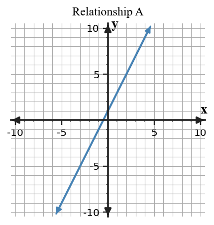
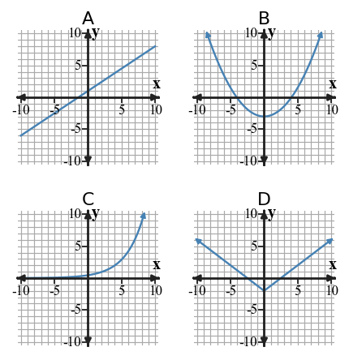
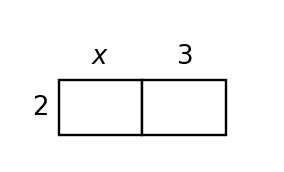
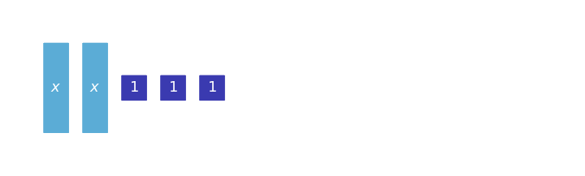
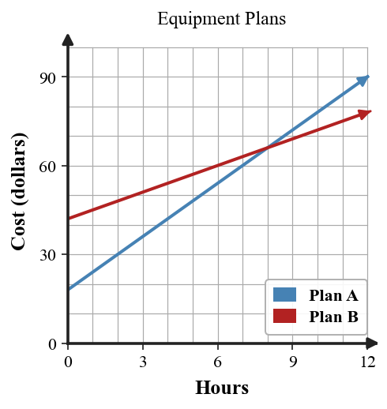

Algebra 1 — Unit 1: Foundations of Functions and Algebra Canonical Bank
Essential Standard: Students will represent and interpret relationships by connecting tables, graphs, equations, and contexts that model the same situation.
Unit Mastery Goals
U1-MG01: Compute with rational numbers and evaluate numerical or algebraic expressions accurately, using order of operations and substitution while checking reasonableness.
U1-MG02: Rewrite algebraic expressions into equivalent forms by using properties, structure, terms, factors, and the distributive property.
U1-MG03: Solve one-variable equations with equivalent transformations and verify and interpret solutions.
U1-MG04: Solve one-variable inequalities, represent solution sets on number lines, and interpret boundaries and constraints.
Progress language
Not Yet / Approaching / Meeting / Exceeding
Learning Ladder
Classify terms, symbols, and quantities in an algebraic representation.
Evaluate rational-number and algebraic expressions accurately.
Represent quantitative or algebraic information on number lines or through equivalent steps.
Rewrite expressions and solve equations or inequalities using equivalent transformations.
Check reasonableness, constraints, and interpretation of a result.
Critique a pathway, representation, or claim and explain what must change.
Construct or revise an algebraic representation from a context or condition set.
Build a coherent contextual model and justify the mathematical decisions.
Section 1.1: Multiple Representations of Relationships
Learning Target: Students will connect tables, graphs, equations, and contexts that represent the same relationship.
I can construct a table, graph, equation, or context from another representation of the same relationship.
I can use features in one representation to work with a related table, graph, equation, or context.
I can determine whether two representations belong to the same relationship using evidence from values, rates, or patterns.
Spiral Intro: Multiple representations of relationships Review: Coordinate graphs, axes, intercepts, and graphical information in situations Mastery: Solve one-variable inequalities, represent solution sets graphically, and interpret them in context
What's To Come
U1-S1-WTC01 | What's To Come | Intro | DOK 2 | instructional

A graph and a table are intended to describe the same relationship. The graph is shown below. The table lists $(0,1)$, $(2,5)$, $(4,9)$. Before learning the section, decide what would convince you that the two representations match.
Teacher answer / solution
Answer / solution: A strong later response checks that the graph contains the listed points and preserves the same constant rate and starting value.
Notes Example
U1-S1-NOTE-EX01 | Notes Example | Intro | DOK 1 | instructional
For the rule $y=2x+1$, find the output when the input is $4$.
Teacher answer / solution
Answer / solution: 9
U1-S1-NOTE-EX02 | Notes Example | Intro | DOK 2 | instructional
At a phone-repair lab, a total begins at 1 and increases by 2 per item. Explain what the point $(3,7)$ means.
Teacher answer / solution
Answer / solution: It means that at input 3, the total output is 7.
U1-S1-NOTE-EX03 | Notes Example | Review | DOK 1 | instructional
A graph crosses the vertical axis at $(0,3)$. What starting value does this show?
Teacher answer / solution
Answer / solution: $3$
U1-S1-NOTE-EX04 | Notes Example | Mastery | DOK 2 | instructional | U1-MG04
Solve $2x+3 \ge 11$.
Teacher answer / solution
Answer / solution: $x \ge 4$
Notes You Try It
U1-S1-NOTE-YTI01 | Notes You Try It | Intro | DOK 2 | instructional
A relationship starts at -2 and increases by 4 for every 1-unit increase in the input. Write an equation for the relationship.
Teacher answer / solution
Answer / solution: $y=4x-2$
U1-S1-NOTE-YTI02 | Notes You Try It | Intro | DOK 1 | instructional
At a recycling drive, the rule is $y=4x-2$. Identify the starting amount and the change per item.
Teacher answer / solution
Answer / solution: Starting amount $=-2$; change per item $=4$.
U1-S1-NOTE-YTI03 | Notes You Try It | Review | DOK 1 | instructional
A graph crosses the vertical axis at $(0,5)$. What starting value does this show?
Teacher answer / solution
Answer / solution: $5$
U1-S1-NOTE-YTI04 | Notes You Try It | Mastery | DOK 2 | instructional | U1-MG04
Solve $4x-2 \ge 22$.
Teacher answer / solution
Answer / solution: $x \ge 6$
Practice Set PS1
U1-S1-PS1-R01 | Practice Set PS1 | Review | DOK 1 | instructional
A graph crosses the vertical axis at $(0,3)$. What starting value does this show?
Teacher answer / solution
Answer / solution: $3$
U1-S1-PS1-M01 | Practice Set PS1 | Mastery | DOK 1 | instructional | U1-MG04
A number line has a open circle at 3 and is shaded to the right. Write the inequality.
Teacher answer / solution
Answer / solution: $x \gt 3$
U1-S1-PS1-R02 | Practice Set PS1 | Review | DOK 2 | instructional
Find the rate of change between the points $(1,4)$ and $(3,10)$.
Teacher answer / solution
Answer / solution: $3$
U1-S1-PS1-M02 | Practice Set PS1 | Mastery | DOK 1 | instructional | U1-MG04
Solve $x+2 \gt 8$.
Teacher answer / solution
Answer / solution: $x \gt 6$
U1-S1-PS1-M03 | Practice Set PS1 | Mastery | DOK 2 | instructional | U1-MG04
Solve $-2x+3 \le -7$. Explain why the inequality direction changes during the solution.
Teacher answer / solution
Answer / solution: $x \ge 5$; dividing by a negative number reverses the inequality.
U1-S1-PS1-I01 | Practice Set PS1 | Intro | DOK 2 | instructional
At a phone-repair lab, a total begins at 1 and increases by 2 per item. Explain what the point $(3,7)$ means.
Teacher answer / solution
Answer / solution: It means that at input 3, the total output is 7.
U1-S1-PS1-M04 | Practice Set PS1 | Mastery | DOK 2 | instructional | U1-MG04
A team needs at least 12 completed tasks. Let $t$ be the number completed. Write an inequality and explain the boundary.
Teacher answer / solution
Answer / solution: $t \ge 12$; 12 is included because “at least” allows equality.
U1-S1-PS1-M05 | Practice Set PS1 | Mastery | DOK 1 | instructional | U1-MG04
Solve $2x \le 6$.
Teacher answer / solution
Answer / solution: $x \le 3$
U1-S1-PS1-R03 | Practice Set PS1 | Review | DOK 2 | instructional
A coordinate graph uses input on the horizontal axis and output on the vertical axis. Explain why swapping the axes would change the meaning of the point $(2,6)$.
Teacher answer / solution
Answer / solution: The first coordinate would no longer represent the input quantity; the variables and interpretation would be reversed.
U1-S1-PS1-I02 | Practice Set PS1 | Intro | DOK 1 | instructional
For the rule $y=2x+1$, find the output when the input is $4$.
Teacher answer / solution
Answer / solution: 9
U1-S1-PS1-I03 | Practice Set PS1 | Intro | DOK 1 | instructional
Complete the missing output in the table for the same relationship.
$x$
$-1$
$0$
$1$
$2$
$y$
$-1$
$1$
$?$
$5$
Teacher answer / solution
Answer / solution: $3$
U1-S1-PS1-M06 | Practice Set PS1 | Mastery | DOK 2 | instructional | U1-MG04
Solve $-2x \gt -4$.
$x \gt 2$
$x \le 2$
$x \lt 2$
$x \lt -2$
Teacher answer / solution
Answer: C. $x \lt 2$
U1-S1-PS1-M07 | Practice Set PS1 | Mastery | DOK 2 | instructional | U1-MG04
A student solves $2x+5 \lt 11$ and writes $x \lt 4$. Find the correct solution and identify the error.
Teacher answer / solution
Answer / solution: $x \lt 3$; after subtracting 5, divide 6 by 2 correctly.
U1-S1-PS1-R04 | Practice Set PS1 | Review | DOK 1 | instructional
In the ordered pair $(2,7)$, which coordinate is the horizontal coordinate and which is the vertical coordinate?
U1-S1-PS2-M02 | Practice Set PS2 | Mastery | DOK 1 | instructional | U1-MG04
Solve $3x \le 12$.
Teacher answer / solution
Answer / solution: $x \le 4$
U1-S1-PS2-M03 | Practice Set PS2 | Mastery | DOK 2 | instructional | U1-MG04
A student solves $2x+5 \lt 13$ and writes $x \lt 5$. Find the correct solution and identify the error.
Teacher answer / solution
Answer / solution: $x \lt 4$; after subtracting 5, divide 8 by 2 correctly.
U1-S1-PS2-M04 | Practice Set PS2 | Mastery | DOK 2 | instructional | U1-MG04
Solve $-3x \gt -9$.
$x \gt 3$
$x \le 3$
$x \lt -3$
$x \lt 3$
Teacher answer / solution
Answer: D. $x \lt 3$
U1-S1-PS2-I01 | Practice Set PS2 | Intro | DOK 1 | instructional
Which ordered pair belongs to the relationship $y=3x+4$ when $x=3$?
$(3,16)$
$(3,13)$
$(13,3)$
$(4,13)$
Teacher answer / solution
Answer: B. $(3,13)$
U1-S1-PS2-I02 | Practice Set PS2 | Intro | DOK 2 | instructional
Two rules are $y=3x+4$ and $y=4x+4$. Name one input where their outputs differ and give both outputs.
Teacher answer / solution
Answer / solution: Answers vary; for $x=1$, the outputs are 7 and 8.
U1-S1-PS2-M05 | Practice Set PS2 | Mastery | DOK 1 | instructional | U1-MG04
A number line has a closed circle at 4 and is shaded to the right. Write the inequality.
Teacher answer / solution
Answer / solution: $x \ge 4$
U1-S1-PS2-M06 | Practice Set PS2 | Mastery | DOK 1 | instructional | U1-MG04
Graph $x \lt 3$ on a number line. State whether the boundary point is open or closed.
Teacher answer / solution
Answer / solution: Open circle at 3 with shading to the left.
U1-S1-PS2-I03 | Practice Set PS2 | Intro | DOK 2 | instructional
Use the table to write a rule in the form $y=mx+b$.
$x$
$0$
$1$
$2$
$3$
$y$
$4$
$7$
$10$
$13$
Teacher answer / solution
Answer / solution: $y=3x+4$
U1-S1-PS2-M07 | Practice Set PS2 | Mastery | DOK 2 | instructional | U1-MG04
Solve $3x+5 \ge 20$.
Teacher answer / solution
Answer / solution: $x \ge 5$
U1-S1-PS2-I04 | Practice Set PS2 | Intro | DOK 1 | instructional
At a art workshop, the rule is $y=3x+4$. Identify the starting amount and the change per item.
Teacher answer / solution
Answer / solution: Starting amount $=4$; change per item $=3$.
U1-S1-PS2-R02 | Practice Set PS2 | Review | DOK 1 | instructional
A graph crosses the vertical axis at $(0,4)$. What starting value does this show?
Teacher answer / solution
Answer / solution: $4$
U1-S1-PS2-R03 | Practice Set PS2 | Review | DOK 2 | instructional
Find the rate of change between the points $(2,6)$ and $(4,12)$.
Teacher answer / solution
Answer / solution: $3$
U1-S1-PS2-M08 | Practice Set PS2 | Mastery | DOK 2 | instructional | U1-MG04
A team needs at least 14 completed tasks. Let $t$ be the number completed. Write an inequality and explain the boundary.
Teacher answer / solution
Answer / solution: $t \ge 14$; 14 is included because “at least” allows equality.
U1-S1-PS2-M09 | Practice Set PS2 | Mastery | DOK 2 | instructional | U1-MG04
Solve $-2x+3 \le -9$. Explain why the inequality direction changes during the solution.
Teacher answer / solution
Answer / solution: $x \ge 6$; dividing by a negative number reverses the inequality.
U1-S1-PS2-M10 | Practice Set PS2 | Mastery | DOK 1 | instructional | U1-MG04
Solve $x+3 \gt 15$.
Teacher answer / solution
Answer / solution: $x \gt 12$
U1-S1-PS2-R04 | Practice Set PS2 | Review | DOK 2 | instructional
A coordinate graph uses input on the horizontal axis and output on the vertical axis. Explain why swapping the axes would change the meaning of the point $(3,7)$.
Teacher answer / solution
Answer / solution: The first coordinate would no longer represent the input quantity; the variables and interpretation would be reversed.
U1-S1-PS2-I05 | Practice Set PS2 | Intro | DOK 2 | instructional
A line has starting value 4 and constant rate 3. Give two points that must lie on the line.
Teacher answer / solution
Answer / solution: Answers vary; for example $(0,4)$ and $(1,7)$.
U1-S1-PS2-R05 | Practice Set PS2 | Review | DOK 1 | instructional
A point $(3,12)$ on a graph represents time in hours on the horizontal axis and distance in miles on the vertical axis. What does the point mean?
After 12 hours the distance is 3 miles.
The rate is 12 miles per hour.
After 3 hours the distance is 12 miles.
The starting distance is 3 miles.
Teacher answer / solution
Answer: C. After 3 hours the distance is 12 miles.
Practice Set PS3
U1-S1-PS3-I01 | Practice Set PS3 | Intro | DOK 2 | instructional
A student says the points $(0,-2)$, $(1,2)$, and $(2,7)$ all follow one constant-rate rule. Is the claim correct? Explain.
Teacher answer / solution
Answer / solution: No. The first change is 4 but the second change is 5.
U1-S1-PS3-M01 | Practice Set PS3 | Mastery | DOK 1 | instructional | U1-MG04
Solve $x+4 \gt 24$.
Teacher answer / solution
Answer / solution: $x \gt 20$
U1-S1-PS3-M02 | Practice Set PS3 | Mastery | DOK 1 | instructional | U1-MG04
Solve $4x \le 20$.
Teacher answer / solution
Answer / solution: $x \le 5$
U1-S1-PS3-M03 | Practice Set PS3 | Mastery | DOK 2 | instructional | U1-MG04
Solve $-2x+3 \le -11$. Explain why the inequality direction changes during the solution.
Teacher answer / solution
Answer / solution: $x \ge 7$; dividing by a negative number reverses the inequality.
U1-S1-PS3-M04 | Practice Set PS3 | Mastery | DOK 2 | instructional | U1-MG04
A team needs at least 16 completed tasks. Let $t$ be the number completed. Write an inequality and explain the boundary.
Teacher answer / solution
Answer / solution: $t \ge 16$; 16 is included because “at least” allows equality.
U1-S1-PS3-R01 | Practice Set PS3 | Review | DOK 2 | instructional
Find the rate of change between the points $(3,8)$ and $(5,14)$.
Teacher answer / solution
Answer / solution: $3$
U1-S1-PS3-I02 | Practice Set PS3 | Intro | DOK 1 | instructional
Complete the missing output in the table for the same relationship.
$x$
$-1$
$0$
$1$
$2$
$y$
$-6$
$-2$
$?$
$6$
Teacher answer / solution
Answer / solution: $2$
U1-S1-PS3-I03 | Practice Set PS3 | Intro | DOK 1 | instructional
Which ordered pair belongs to the relationship $y=4x-2$ when $x=4$?
$(4,18)$
$(14,4)$
$(4,14)$
$(5,14)$
Teacher answer / solution
Answer: C. $(4,14)$
U1-S1-PS3-R02 | Practice Set PS3 | Review | DOK 1 | instructional
In the ordered pair $(4,11)$, which coordinate is the horizontal coordinate and which is the vertical coordinate?
U1-S1-PS3-R03 | Practice Set PS3 | Review | DOK 2 | instructional
A coordinate graph uses input on the horizontal axis and output on the vertical axis. Explain why swapping the axes would change the meaning of the point $(4,8)$.
Teacher answer / solution
Answer / solution: The first coordinate would no longer represent the input quantity; the variables and interpretation would be reversed.
U1-S1-PS3-M05 | Practice Set PS3 | Mastery | DOK 2 | instructional | U1-MG04
A student solves $2x+5 \lt 15$ and writes $x \lt 6$. Find the correct solution and identify the error.
Teacher answer / solution
Answer / solution: $x \lt 5$; after subtracting 5, divide 10 by 2 correctly.
U1-S1-PS3-R04 | Practice Set PS3 | Review | DOK 1 | instructional
A graph crosses the vertical axis at $(0,5)$. What starting value does this show?
Teacher answer / solution
Answer / solution: $5$
U1-S1-PS3-R05 | Practice Set PS3 | Review | DOK 1 | instructional
A point $(4,10)$ on a graph represents time in hours on the horizontal axis and distance in miles on the vertical axis. What does the point mean?
After 10 hours the distance is 4 miles.
The rate is 10 miles per hour.
The starting distance is 4 miles.
After 4 hours the distance is 10 miles.
Teacher answer / solution
Answer: D. After 4 hours the distance is 10 miles.
U1-S1-PS3-I04 | Practice Set PS3 | Intro | DOK 1 | instructional
At a recycling drive, the rule is $y=4x-2$. Identify the starting amount and the change per item.
Teacher answer / solution
Answer / solution: Starting amount $=-2$; change per item $=4$.
U1-S1-PS3-M06 | Practice Set PS3 | Mastery | DOK 1 | instructional | U1-MG04
Graph $x \lt 4$ on a number line. State whether the boundary point is open or closed.
Teacher answer / solution
Answer / solution: Open circle at 4 with shading to the left.
U1-S1-PS3-M07 | Practice Set PS3 | Mastery | DOK 1 | instructional | U1-MG04
A container can hold no more than 30 kilograms. Which inequality models mass $m$?
$m \lt 30$
$m \le 30$
$m \ge 30$
$m \gt 30$
Teacher answer / solution
Answer: B. $m \le 30$
U1-S1-PS3-I05 | Practice Set PS3 | Intro | DOK 2 | instructional
A relationship starts at -2 and increases by 4 for every 1-unit increase in the input. Write an equation for the relationship.
Teacher answer / solution
Answer / solution: $y=4x-2$
U1-S1-PS3-M08 | Practice Set PS3 | Mastery | DOK 1 | instructional | U1-MG04
A number line has a open circle at 5 and is shaded to the right. Write the inequality.
Teacher answer / solution
Answer / solution: $x \gt 5$
U1-S1-PS3-M09 | Practice Set PS3 | Mastery | DOK 2 | instructional | U1-MG04
Solve $-4x \gt -16$.
$x \lt 4$
$x \gt 4$
$x \le 4$
$x \lt -4$
Teacher answer / solution
Answer: A. $x \lt 4$
U1-S1-PS3-M10 | Practice Set PS3 | Mastery | DOK 2 | instructional | U1-MG04
Solve $4x-2 \ge 22$.
Teacher answer / solution
Answer / solution: $x \ge 6$
Practice Set Extra Practice
U1-S1-XP-M01 | Practice Set Extra Practice | Mastery | DOK 2 | instructional | U1-MG04
A team needs at least 18 completed tasks. Let $t$ be the number completed. Write an inequality and explain the boundary.
Teacher answer / solution
Answer / solution: $t \ge 18$; 18 is included because “at least” allows equality.
U1-S1-XP-I01 | Practice Set Extra Practice | Intro | DOK 2 | instructional
The points $(0,3)$, $(2,13)$, $(5,28)$ lie on one relationship. State the constant rate and starting value.
Teacher answer / solution
Answer / solution: Rate $=5$; starting value $=3$.
U1-S1-XP-M02 | Practice Set Extra Practice | Mastery | DOK 1 | instructional | U1-MG04
A container can hold no more than 35 kilograms. Which inequality models mass $m$?
$m \lt 35$
$m \ge 35$
$m \le 35$
$m \gt 35$
Teacher answer / solution
Answer: C. $m \le 35$
U1-S1-XP-M03 | Practice Set Extra Practice | Mastery | DOK 2 | instructional | U1-MG04
Solve $-2x+3 \le -13$. Explain why the inequality direction changes during the solution.
Teacher answer / solution
Answer / solution: $x \ge 8$; dividing by a negative number reverses the inequality.
U1-S1-XP-M04 | Practice Set Extra Practice | Mastery | DOK 2 | instructional | U1-MG04
Solve $5x+4 \ge 39$.
Teacher answer / solution
Answer / solution: $x \ge 7$
U1-S1-XP-I02 | Practice Set Extra Practice | Intro | DOK 2 | instructional
Write a short context that could be modeled by $y=5x+3$. State what $x$ and $y$ represent.
Teacher answer / solution
Answer / solution: Answers vary. The context must have starting value 3 and change 5 per unit of input.
U1-S1-XP-R01 | Practice Set Extra Practice | Review | DOK 1 | instructional
In the ordered pair $(5,13)$, which coordinate is the horizontal coordinate and which is the vertical coordinate?
U1-S1-XP-M05 | Practice Set Extra Practice | Mastery | DOK 1 | instructional | U1-MG04
Solve $5x \le 30$.
Teacher answer / solution
Answer / solution: $x \le 6$
U1-S1-XP-I03 | Practice Set Extra Practice | Intro | DOK 2 | instructional
At a book fair, a total begins at 3 and increases by 5 per item. Explain what the point $(3,18)$ means.
Teacher answer / solution
Answer / solution: It means that at input 3, the total output is 18.
U1-S1-XP-M06 | Practice Set Extra Practice | Mastery | DOK 2 | instructional | U1-MG04
Solve $-5x \gt -25$.
$x \gt 5$
$x \lt 5$
$x \le 5$
$x \lt -5$
Teacher answer / solution
Answer: B. $x \lt 5$
U1-S1-XP-R02 | Practice Set Extra Practice | Review | DOK 2 | instructional
Find the rate of change between the points $(4,10)$ and $(6,16)$.
Teacher answer / solution
Answer / solution: $3$
U1-S1-XP-M07 | Practice Set Extra Practice | Mastery | DOK 2 | instructional | U1-MG04
A student solves $2x+5 \lt 17$ and writes $x \lt 7$. Find the correct solution and identify the error.
Teacher answer / solution
Answer / solution: $x \lt 6$; after subtracting 5, divide 12 by 2 correctly.
U1-S1-XP-R03 | Practice Set Extra Practice | Review | DOK 2 | instructional
A coordinate graph uses input on the horizontal axis and output on the vertical axis. Explain why swapping the axes would change the meaning of the point $(5,9)$.
Teacher answer / solution
Answer / solution: The first coordinate would no longer represent the input quantity; the variables and interpretation would be reversed.
U1-S1-XP-R04 | Practice Set Extra Practice | Review | DOK 1 | instructional
A graph crosses the vertical axis at $(0,6)$. What starting value does this show?
Teacher answer / solution
Answer / solution: $6$
U1-S1-XP-I04 | Practice Set Extra Practice | Intro | DOK 1 | instructional
Which ordered pair belongs to the relationship $y=5x+3$ when $x=5$?
$(5,33)$
$(28,5)$
$(6,28)$
$(5,28)$
Teacher answer / solution
Answer: D. $(5,28)$
U1-S1-XP-M08 | Practice Set Extra Practice | Mastery | DOK 1 | instructional | U1-MG04
A number line has a closed circle at 6 and is shaded to the right. Write the inequality.
Teacher answer / solution
Answer / solution: $x \ge 6$
U1-S1-XP-M09 | Practice Set Extra Practice | Mastery | DOK 1 | instructional | U1-MG04
Solve $x+5 \gt 35$.
Teacher answer / solution
Answer / solution: $x \gt 30$
U1-S1-XP-R05 | Practice Set Extra Practice | Review | DOK 1 | instructional
A point $(5,15)$ on a graph represents time in hours on the horizontal axis and distance in miles on the vertical axis. What does the point mean?
After 5 hours the distance is 15 miles.
After 15 hours the distance is 5 miles.
The rate is 15 miles per hour.
The starting distance is 5 miles.
Teacher answer / solution
Answer: A. After 5 hours the distance is 15 miles.
U1-S1-XP-I05 | Practice Set Extra Practice | Intro | DOK 2 | instructional
A line has starting value 3 and constant rate 5. Give two points that must lie on the line.
Teacher answer / solution
Answer / solution: Answers vary; for example $(0,3)$ and $(1,8)$.
U1-S1-XP-M10 | Practice Set Extra Practice | Mastery | DOK 1 | instructional | U1-MG04
Graph $x \lt 5$ on a number line. State whether the boundary point is open or closed.
Teacher answer / solution
Answer / solution: Open circle at 5 with shading to the left.
CYU
U1-S1-CYU-Q01 | CYU | Intro | DOK 2 | instructional
A line has starting value 4 and constant rate 3. Give two points that must lie on the line.
Teacher answer / solution
Answer / solution: Answers vary; for example $(0,4)$ and $(1,7)$.
U1-S1-CYU-Q02 | CYU | Intro | DOK 2 | instructional
Write a short context that could be modeled by $y=5x+3$. State what $x$ and $y$ represent.
Teacher answer / solution
Answer / solution: Answers vary. The context must have starting value 3 and change 5 per unit of input.
U1-S1-CYU-Q03 | CYU | Review | DOK 1 | instructional
In the ordered pair $(3,9)$, which coordinate is the horizontal coordinate and which is the vertical coordinate?
U1-S1-CYU-Q04 | CYU | Review | DOK 2 | instructional
A coordinate graph uses input on the horizontal axis and output on the vertical axis. Explain why swapping the axes would change the meaning of the point $(5,9)$.
Teacher answer / solution
Answer / solution: The first coordinate would no longer represent the input quantity; the variables and interpretation would be reversed.
U1-S1-BLK-Q01 | Blooket | Intro | DOK 2 | instructional
A relationship starts at -2 and increases by 4 for every 1-unit increase in the input. Write an equation for the relationship.
$y=5x-2$
$y=4x-2$
$y=4x+2$
$y=-2x+4$
Teacher answer / solution
Answer: B. $y=4x-2$
U1-S1-BLK-Q02 | Blooket | Intro | DOK 1 | instructional
Which ordered pair belongs to the relationship $y=5x+3$ when $x=5$?
$(5,33)$
$(28,5)$
$(6,28)$
$(5,28)$
Teacher answer / solution
Answer: D. $(5,28)$
U1-S1-BLK-Q03 | Blooket | Intro | DOK 1 | instructional
Complete the missing output in the table for the same relationship.
3
4
2
-3
Teacher answer / solution
Answer: A. 3
U1-S1-BLK-Q04 | Blooket | Intro | DOK 1 | instructional
At a art workshop, the rule is $y=3x+4$. Identify the starting amount and the change per item.
Rate 4; starting value 3
Rate 4; starting value 4
Rate 3; starting value 4
Rate 3; starting value 5
Teacher answer / solution
Answer: C. Rate 3; starting value 4
U1-S1-BLK-Q05 | Blooket | Intro | DOK 2 | instructional
A student says the points $(0,-2)$, $(1,2)$, and $(2,7)$ all follow one constant-rate rule. Is the claim correct? Explain.
Yes; the listed information is enough to confirm the claim.
Yes; matching one value guarantees the whole relationship matches.
No. The first change is 4 but the second change is 5.
No; but only because the input values are different.
Teacher answer / solution
Answer: C. No. The first change is 4 but the second change is 5.
U1-S1-BLK-Q06 | Blooket | Review | DOK 1 | instructional
In the ordered pair $(3,9)$, which coordinate is the horizontal coordinate and which is the vertical coordinate?
Horizontal 3; vertical 9
Horizontal 9; vertical 3
Horizontal -3; vertical 9
Horizontal 3; vertical -9
Teacher answer / solution
Answer: A. Horizontal 3; vertical 9
U1-S1-BLK-Q07 | Blooket | Review | DOK 1 | instructional
A point $(4,10)$ on a graph represents time in hours on the horizontal axis and distance in miles on the vertical axis. What does the point mean?
After 10 hours the distance is 4 miles.
The rate is 10 miles per hour.
The starting distance is 4 miles.
After 4 hours the distance is 10 miles.
Teacher answer / solution
Answer: D. After 4 hours the distance is 10 miles.
U1-S1-BLK-Q08 | Blooket | Review | DOK 1 | instructional
A graph crosses the vertical axis at $(0,6)$. What starting value does this show?
7
6
5
-6
Teacher answer / solution
Answer: B. 6
U1-S1-BLK-Q09 | Blooket | Review | DOK 2 | instructional
Find the rate of change between the points $(1,4)$ and $(3,10)$.
3
4
2
-3
Teacher answer / solution
Answer: A. 3
U1-S1-BLK-Q10 | Blooket | Review | DOK 2 | instructional
A coordinate graph uses input on the horizontal axis and output on the vertical axis. Explain why swapping the axes would change the meaning of the point $(3,7)$.
The point would keep exactly the same variable meanings.
Only the scale would change; the variables would not.
The first coordinate would no longer represent the input quantity; the variables and interpretation would be reversed.
Swapping axes changes the rate but never changes input/output roles.
Teacher answer / solution
Answer: C. The first coordinate would no longer represent the input quantity; the variables and interpretation would be reversed.
A team needs at least 16 completed tasks. Let $t$ be the number completed. Write an inequality and explain the boundary.
Teacher answer / solution
Answer / solution: $t \ge 16$; 16 is included because “at least” allows equality.
Exit Ticket A
U1-S1-ET-A-Q01 | Exit Ticket A | Mastery | DOK 1 | formative-secure | U1-MG04
Solve $5x+7\le32$.
Teacher answer / solution
Answer / solution: $x\le5$
U1-S1-ET-A-Q02 | Exit Ticket A | Mastery | DOK 2 | formative-secure | U1-MG04
A storage shelf can hold at most 54 kilograms. It already holds 14 kilograms, and each added box has mass 8 kilograms. Write and solve an inequality for the number $b$ of additional boxes.
Teacher answer / solution
Answer / solution: $14+8b\le54$, so $b\le5$. At most 5 additional whole boxes can be added.
Exit Ticket B
U1-S1-ET-B-Q01 | Exit Ticket B | Mastery | DOK 1 | formative-secure | U1-MG04
A number line has a closed circle at $-3$ and is shaded left. Write the inequality.
Teacher answer / solution
Answer / solution: $x\le-3$
U1-S1-ET-B-Q02 | Exit Ticket B | Mastery | DOK 2 | formative-secure | U1-MG04
A student solves $-4x+1\gt17$ and writes $x\gt-4$. Correct the inequality and identify the key error.
Teacher answer / solution
Answer / solution: $x\lt-4$. Dividing by a negative number reverses the inequality sign.
Exit Ticket C
U1-S1-ET-C-Q01 | Exit Ticket C | Mastery | DOK 2 | formative-secure | U1-MG04
Solve $3(x-2)\ge15$.
Teacher answer / solution
Answer / solution: $x\ge7$
U1-S1-ET-C-Q02 | Exit Ticket C | Mastery | DOK 2 | formative-secure | U1-MG04
A freezer must stay below $-2$°C. Let $T$ be its temperature in degrees Celsius. Write the inequality and state whether the boundary is included.
Teacher answer / solution
Answer / solution: $T\lt-2$; the boundary is not included because the temperature must be below, not equal to, $-2$°C.
Section 1.2: Inputs, Outputs, and Functions
Learning Target: Students will interpret functions as rules that connect inputs and outputs without requiring formal domain and range notation.
I can formulate a rule that connects inputs and outputs.
I can generate missing values and ordered pairs from a function rule.
I can assess whether each input has exactly one output.
Spiral Intro: Functions as rules connecting inputs and outputs Review: Patterns and input-output rules shown in tables, words, and symbols Mastery: Evaluate numerical and algebraic expressions using substitution and order of operations
What's To Come
U1-S2-WTC01 | What's To Come | Intro | DOK 2 | instructional
Compare the sets of ordered pairs $A=\{(1,4),(2,7),(3,10)\}$ and $B=\{(1,4),(1,7),(3,10)\}$. What difference might matter if each set is supposed to describe a machine with one output for each input?
Teacher answer / solution
Answer / solution: Set B assigns input 1 two outputs; this is the key issue for deciding whether a relation is a function.
Notes Example
U1-S2-NOTE-EX01 | Notes Example | Intro | DOK 1 | instructional
For the function rule $f(x)=2x+3$, find $f(2)$.
Teacher answer / solution
Answer / solution: $7$
U1-S2-NOTE-EX02 | Notes Example | Intro | DOK 2 | instructional
A function machine multiplies the input by 2 and then adds 3. What input produces the output 11?
Teacher answer / solution
Answer / solution: $4$
U1-S2-NOTE-EX03 | Notes Example | Review | DOK 2 | instructional
A pattern starts at 1 when $x=0$ and adds 2 each time $x$ increases by 1. Write the rule.
Teacher answer / solution
Answer / solution: $y=2x+1$
U1-S2-NOTE-EX04 | Notes Example | Mastery | DOK 1 | instructional | U1-MG01
Evaluate $2x+2y$ when $x=-2$ and $y=4$.
Teacher answer / solution
Answer / solution: $4$
Notes You Try It
U1-S2-NOTE-YTI01 | Notes You Try It | Intro | DOK 1 | instructional
For the function rule $f(x)=4x+2$, find $f(4)$.
Teacher answer / solution
Answer / solution: $18$
U1-S2-NOTE-YTI02 | Notes You Try It | Intro | DOK 2 | instructional
A function machine multiplies the input by 4 and then adds 2. What input produces the output 26?
Teacher answer / solution
Answer / solution: $6$
U1-S2-NOTE-YTI03 | Notes You Try It | Review | DOK 2 | instructional
A pattern starts at 4 when $x=0$ and adds 3 each time $x$ increases by 1. Write the rule.
Teacher answer / solution
Answer / solution: $y=3x+4$
U1-S2-NOTE-YTI04 | Notes You Try It | Mastery | DOK 1 | instructional | U1-MG01
Evaluate $4x+2y$ when $x=-4$ and $y=3$.
Teacher answer / solution
Answer / solution: $-10$
Practice Set PS1
U1-S2-PS1-M01 | Practice Set PS1 | Mastery | DOK 1 | instructional | U1-MG01
Evaluate $\frac{3}{4}x-2$ when $x=4$.
Teacher answer / solution
Answer / solution: $1$
U1-S2-PS1-R01 | Practice Set PS1 | Review | DOK 2 | instructional
For the rule $y=2x+1$, which input gives output 11?
Teacher answer / solution
Answer / solution: $5$
U1-S2-PS1-M02 | Practice Set PS1 | Mastery | DOK 2 | instructional | U1-MG01
A formula is $C=4n+7$. Find $C$ when $n=3$ and state the substitution used.
Teacher answer / solution
Answer / solution: $C=4(3)+7=19$.
U1-S2-PS1-M03 | Practice Set PS1 | Mastery | DOK 1 | instructional | U1-MG01
Evaluate $(n+3)^2-4$ when $n=2$.
Teacher answer / solution
Answer / solution: $21$
U1-S2-PS1-R02 | Practice Set PS1 | Review | DOK 2 | instructional
A pattern starts at 1 when $x=0$ and adds 2 each time $x$ increases by 1. Write the rule.
Teacher answer / solution
Answer / solution: $y=2x+1$
U1-S2-PS1-R03 | Practice Set PS1 | Review | DOK 2 | instructional
A student sees outputs 1, 3, 5, 7 and says the rule is “add 2.” Improve the description so it clearly connects any input to its output.
Teacher answer / solution
Answer / solution: A complete rule is $y=2x+1$: multiply the input by 2 and then add 1.
U1-S2-PS1-M04 | Practice Set PS1 | Mastery | DOK 1 | instructional | U1-MG01
Evaluate $2x+5$ when $x=-2$.
Teacher answer / solution
Answer / solution: $1$
U1-S2-PS1-M05 | Practice Set PS1 | Mastery | DOK 1 | instructional | U1-MG01
Evaluate $x^2+2$ when $x=-2$.
Teacher answer / solution
Answer / solution: $6$
U1-S2-PS1-I01 | Practice Set PS1 | Intro | DOK 2 | instructional
Create three ordered pairs for the rule $g(x)=2x+3$.
Teacher answer / solution
Answer / solution: Answers vary; substitute any three inputs and pair each input with its output.
U1-S2-PS1-M06 | Practice Set PS1 | Mastery | DOK 1 | instructional | U1-MG01
Evaluate $3+2(2)$.
5
10
7
8
Teacher answer / solution
Answer: C. 7
U1-S2-PS1-I02 | Practice Set PS1 | Intro | DOK 1 | instructional
Which statement is true about the ordered pairs $(0,3)$, $(1,5)$, $(2,7)$?
Each input has exactly one output.
One input has two different outputs.
The outputs are the inputs.
There is no rule connecting the values.
Teacher answer / solution
Answer: A. Each input has exactly one output.
U1-S2-PS1-M07 | Practice Set PS1 | Mastery | DOK 2 | instructional | U1-MG01
A student evaluates $2x^2$ at $x=-2$ as $6$. Find the correct value and explain the mistake.
Teacher answer / solution
Answer / solution: $8$; the coefficient 2 multiplies $x^2$ after the exponent is evaluated.
U1-S2-PS1-M08 | Practice Set PS1 | Mastery | DOK 1 | instructional | U1-MG01
Evaluate $2x+2y$ when $x=-2$ and $y=4$.
Teacher answer / solution
Answer / solution: $4$
U1-S2-PS1-M09 | Practice Set PS1 | Mastery | DOK 2 | instructional | U1-MG01
Without exact arithmetic first, estimate whether $2x+5$ at $x=10$ should be closest to 5, 25, or 50; then verify.
Teacher answer / solution
Answer / solution: Closest to 25; exact value is 25.
U1-S2-PS1-M10 | Practice Set PS1 | Mastery | DOK 1 | instructional | U1-MG01
Which value equals $(2+2)(3)-5$?
-8
3
17
7
Teacher answer / solution
Answer: D. 7
U1-S2-PS1-I03 | Practice Set PS1 | Intro | DOK 2 | instructional
Write a function rule that matches the table.
$x$
$0$
$1$
$2$
$3$
$y$
$3$
$5$
$7$
$9$
Teacher answer / solution
Answer / solution: $f(x)=2x+3$
U1-S2-PS1-R04 | Practice Set PS1 | Review | DOK 2 | instructional
Which rule matches the table?
$x$
$0$
$1$
$2$
$3$
$y$
$1$
$3$
$5$
$7$
$y=3x+1$
$y=2x+1$
$y=2x+2$
$y=x+2$
Teacher answer / solution
Answer: B. $y=2x+1$
U1-S2-PS1-R05 | Practice Set PS1 | Review | DOK 1 | instructional
Continue the pattern with the next two terms: $1, 3, 5, 7$.
Teacher answer / solution
Answer / solution: $9, 11$
U1-S2-PS1-I04 | Practice Set PS1 | Intro | DOK 2 | instructional
A function machine multiplies the input by 2 and then adds 3. What input produces the output 11?
Teacher answer / solution
Answer / solution: $4$
U1-S2-PS1-I05 | Practice Set PS1 | Intro | DOK 1 | instructional
For the function rule $f(x)=2x+3$, find $f(2)$.
Teacher answer / solution
Answer / solution: $7$
Practice Set PS2
U1-S2-PS2-M01 | Practice Set PS2 | Mastery | DOK 1 | instructional | U1-MG01
Which value equals $(3+2)(3)-5$?
10
-10
4
20
Teacher answer / solution
Answer: A. 10
U1-S2-PS2-I01 | Practice Set PS2 | Intro | DOK 1 | instructional
For the function rule $f(x)=3x-1$, find $f(3)$.
Teacher answer / solution
Answer / solution: $8$
U1-S2-PS2-M02 | Practice Set PS2 | Mastery | DOK 1 | instructional | U1-MG01
Evaluate $x^2+3$ when $x=3$.
Teacher answer / solution
Answer / solution: $12$
U1-S2-PS2-M03 | Practice Set PS2 | Mastery | DOK 2 | instructional | U1-MG01
A formula is $C=4n+7$. Find $C$ when $n=4$ and state the substitution used.
Teacher answer / solution
Answer / solution: $C=4(4)+7=23$.
U1-S2-PS2-M04 | Practice Set PS2 | Mastery | DOK 1 | instructional | U1-MG01
Evaluate $3+3(3)$.
9
18
13
12
Teacher answer / solution
Answer: D. 12
U1-S2-PS2-R01 | Practice Set PS2 | Review | DOK 2 | instructional
For the rule $y=4x+2$, which input gives output 26?
Teacher answer / solution
Answer / solution: $6$
U1-S2-PS2-I02 | Practice Set PS2 | Intro | DOK 2 | instructional
A function machine multiplies the input by 3 and then subtracts 1. What input produces the output 14?
Teacher answer / solution
Answer / solution: $5$
U1-S2-PS2-M05 | Practice Set PS2 | Mastery | DOK 2 | instructional | U1-MG01
Without exact arithmetic first, estimate whether $3x-1$ at $x=10$ should be closest to 9, 29, or 54; then verify.
Teacher answer / solution
Answer / solution: Closest to 29; exact value is 29.
U1-S2-PS2-M06 | Practice Set PS2 | Mastery | DOK 1 | instructional | U1-MG01
Evaluate $(n+3)^2-4$ when $n=3$.
Teacher answer / solution
Answer / solution: $32$
U1-S2-PS2-R02 | Practice Set PS2 | Review | DOK 2 | instructional
Which rule matches the table?
$x$
$0$
$1$
$2$
$3$
$y$
$2$
$6$
$10$
$14$
$y=5x+2$
$y=4x+3$
$y=4x+2$
$y=2x+4$
Teacher answer / solution
Answer: C. $y=4x+2$
U1-S2-PS2-M07 | Practice Set PS2 | Mastery | DOK 1 | instructional | U1-MG01
Evaluate $\frac{3}{4}x-2$ when $x=8$.
Teacher answer / solution
Answer / solution: $4$
U1-S2-PS2-M08 | Practice Set PS2 | Mastery | DOK 1 | instructional | U1-MG01
Evaluate $3x-1$ when $x=3$.
Teacher answer / solution
Answer / solution: $8$
U1-S2-PS2-R03 | Practice Set PS2 | Review | DOK 2 | instructional
A student sees outputs 2, 6, 10, 14 and says the rule is “add 4.” Improve the description so it clearly connects any input to its output.
Teacher answer / solution
Answer / solution: A complete rule is $y=4x+2$: multiply the input by 4 and then add 2.
U1-S2-PS2-I03 | Practice Set PS2 | Intro | DOK 1 | instructional
Which statement best describes $(0,-1)$, $(1,2)$, $(1,4)$?
It is a function because there are three ordered pairs.
It is not a function because input 1 has two outputs.
It is not a function because outputs repeat.
It is a function because the inputs are numbers.
Teacher answer / solution
Answer: B. It is not a function because input 1 has two outputs.
U1-S2-PS2-R04 | Practice Set PS2 | Review | DOK 1 | instructional
Continue the pattern with the next two terms: $2, 6, 10, 14$.
Teacher answer / solution
Answer / solution: $18, 22$
U1-S2-PS2-M09 | Practice Set PS2 | Mastery | DOK 1 | instructional | U1-MG01
Evaluate $3x+2y$ when $x=3$ and $y=-2$.
Teacher answer / solution
Answer / solution: $5$
U1-S2-PS2-I04 | Practice Set PS2 | Intro | DOK 2 | instructional
A table includes $(0,-1)$, $(2,5)$, and $(5,14)$. Describe the rule in words.
Teacher answer / solution
Answer / solution: Multiply the input by 3 and then subtract 1.
U1-S2-PS2-I05 | Practice Set PS2 | Intro | DOK 2 | instructional
Write a function rule that matches the table.
$x$
$0$
$1$
$2$
$3$
$y$
$-1$
$2$
$5$
$8$
Teacher answer / solution
Answer / solution: $f(x)=3x-1$
U1-S2-PS2-M10 | Practice Set PS2 | Mastery | DOK 2 | instructional | U1-MG01
A student evaluates $3x^2$ at $x=3$ as $12$. Find the correct value and explain the mistake.
Teacher answer / solution
Answer / solution: $27$; the coefficient 3 multiplies $x^2$ after the exponent is evaluated.
U1-S2-PS2-R05 | Practice Set PS2 | Review | DOK 2 | instructional
A pattern starts at 2 when $x=0$ and adds 4 each time $x$ increases by 1. Write the rule.
Teacher answer / solution
Answer / solution: $y=4x+2$
Practice Set PS3
U1-S2-PS3-M01 | Practice Set PS3 | Mastery | DOK 1 | instructional | U1-MG01
Evaluate $(n+3)^2-4$ when $n=4$.
Teacher answer / solution
Answer / solution: $45$
U1-S2-PS3-I01 | Practice Set PS3 | Intro | DOK 1 | instructional
Which statement is true about the ordered pairs $(0,2)$, $(1,6)$, $(2,10)$?
One input has two different outputs.
The outputs are the inputs.
Each input has exactly one output.
There is no rule connecting the values.
Teacher answer / solution
Answer: C. Each input has exactly one output.
U1-S2-PS3-R01 | Practice Set PS3 | Review | DOK 2 | instructional
A student sees outputs 4, 7, 10, 13 and says the rule is “add 3.” Improve the description so it clearly connects any input to its output.
Teacher answer / solution
Answer / solution: A complete rule is $y=3x+4$: multiply the input by 3 and then add 4.
U1-S2-PS3-M02 | Practice Set PS3 | Mastery | DOK 1 | instructional | U1-MG01
Evaluate $3+4(4)$.
19
15
28
11
Teacher answer / solution
Answer: A. 19
U1-S2-PS3-I02 | Practice Set PS3 | Intro | DOK 2 | instructional
A student reverses the coordinates in $(3,14)$ and calls 14 the input. Explain the error.
Teacher answer / solution
Answer / solution: The first coordinate is the input and the second coordinate is the output; reversing them changes the relationship.
U1-S2-PS3-I03 | Practice Set PS3 | Intro | DOK 1 | instructional
For the function rule $f(x)=4x+2$, find $f(4)$.
Teacher answer / solution
Answer / solution: $18$
U1-S2-PS3-M03 | Practice Set PS3 | Mastery | DOK 1 | instructional | U1-MG01
Evaluate $x^2+4$ when $x=-4$.
Teacher answer / solution
Answer / solution: $20$
U1-S2-PS3-R02 | Practice Set PS3 | Review | DOK 2 | instructional
For the rule $y=3x+4$, which input gives output 25?
Teacher answer / solution
Answer / solution: $7$
U1-S2-PS3-R03 | Practice Set PS3 | Review | DOK 2 | instructional
A pattern starts at 4 when $x=0$ and adds 3 each time $x$ increases by 1. Write the rule.
Teacher answer / solution
Answer / solution: $y=3x+4$
U1-S2-PS3-I04 | Practice Set PS3 | Intro | DOK 2 | instructional
A function machine multiplies the input by 4 and then adds 2. What input produces the output 26?
Teacher answer / solution
Answer / solution: $6$
U1-S2-PS3-M04 | Practice Set PS3 | Mastery | DOK 1 | instructional | U1-MG01
Evaluate $4x+3$ when $x=-4$.
Teacher answer / solution
Answer / solution: $-13$
U1-S2-PS3-R04 | Practice Set PS3 | Review | DOK 1 | instructional
Continue the pattern with the next two terms: $4, 7, 10, 13$.
Teacher answer / solution
Answer / solution: $16, 19$
U1-S2-PS3-R05 | Practice Set PS3 | Review | DOK 2 | instructional
Which rule matches the table?
$x$
$0$
$1$
$2$
$3$
$y$
$4$
$7$
$10$
$13$
$y=4x+4$
$y=3x+5$
$y=4x+3$
$y=3x+4$
Teacher answer / solution
Answer: D. $y=3x+4$
U1-S2-PS3-M05 | Practice Set PS3 | Mastery | DOK 1 | instructional | U1-MG01
Which value equals $(4+2)(3)-5$?
-12
13
5
23
Teacher answer / solution
Answer: B. 13
U1-S2-PS3-I05 | Practice Set PS3 | Intro | DOK 2 | instructional
Write a function rule that matches the table.
$x$
$0$
$1$
$2$
$3$
$y$
$2$
$6$
$10$
$14$
Teacher answer / solution
Answer / solution: $f(x)=4x+2$
U1-S2-PS3-M06 | Practice Set PS3 | Mastery | DOK 2 | instructional | U1-MG01
A student evaluates $4x^2$ at $x=-4$ as $20$. Find the correct value and explain the mistake.
Teacher answer / solution
Answer / solution: $64$; the coefficient 4 multiplies $x^2$ after the exponent is evaluated.
U1-S2-PS3-M07 | Practice Set PS3 | Mastery | DOK 1 | instructional | U1-MG01
Evaluate $4x+2y$ when $x=-4$ and $y=3$.
Teacher answer / solution
Answer / solution: $-10$
U1-S2-PS3-M08 | Practice Set PS3 | Mastery | DOK 2 | instructional | U1-MG01
A formula is $C=4n+7$. Find $C$ when $n=5$ and state the substitution used.
Teacher answer / solution
Answer / solution: $C=4(5)+7=27$.
U1-S2-PS3-M09 | Practice Set PS3 | Mastery | DOK 2 | instructional | U1-MG01
Without exact arithmetic first, estimate whether $4x+3$ at $x=10$ should be closest to 23, 43, or 68; then verify.
Teacher answer / solution
Answer / solution: Closest to 43; exact value is 43.
U1-S2-PS3-M10 | Practice Set PS3 | Mastery | DOK 1 | instructional | U1-MG01
Evaluate $\frac{3}{4}x-2$ when $x=12$.
Teacher answer / solution
Answer / solution: $7$
Practice Set Extra Practice
U1-S2-XP-I01 | Practice Set Extra Practice | Intro | DOK 2 | instructional
A function machine multiplies the input by 5 and then adds 4. What input produces the output 39?
Teacher answer / solution
Answer / solution: $7$
U1-S2-XP-M01 | Practice Set Extra Practice | Mastery | DOK 1 | instructional | U1-MG01
Evaluate $3+5(5)$.
23
28
40
13
Teacher answer / solution
Answer: B. 28
U1-S2-XP-M02 | Practice Set Extra Practice | Mastery | DOK 2 | instructional | U1-MG01
A formula is $C=4n+7$. Find $C$ when $n=6$ and state the substitution used.
Teacher answer / solution
Answer / solution: $C=4(6)+7=31$.
U1-S2-XP-I02 | Practice Set Extra Practice | Intro | DOK 2 | instructional
Invent a function rule that sends input 0 to 4 and increases the output by 5 whenever the input increases by 1.
Teacher answer / solution
Answer / solution: One valid rule is $f(x)=5x+4$.
U1-S2-XP-R01 | Practice Set Extra Practice | Review | DOK 2 | instructional
For the rule $y=5x-1$, which input gives output 39?
Teacher answer / solution
Answer / solution: $8$
U1-S2-XP-I03 | Practice Set Extra Practice | Intro | DOK 2 | instructional
Write a function rule that matches the table.
$x$
$0$
$1$
$2$
$3$
$y$
$4$
$9$
$14$
$19$
Teacher answer / solution
Answer / solution: $f(x)=5x+4$
U1-S2-XP-M03 | Practice Set Extra Practice | Mastery | DOK 1 | instructional | U1-MG01
Which value equals $(5+2)(3)-5$?
-14
6
16
26
Teacher answer / solution
Answer: C. 16
U1-S2-XP-M04 | Practice Set Extra Practice | Mastery | DOK 2 | instructional | U1-MG01
A student evaluates $5x^2$ at $x=2$ as $9$. Find the correct value and explain the mistake.
Teacher answer / solution
Answer / solution: $20$; the coefficient 5 multiplies $x^2$ after the exponent is evaluated.
U1-S2-XP-R02 | Practice Set Extra Practice | Review | DOK 2 | instructional
A pattern starts at -1 when $x=0$ and adds 5 each time $x$ increases by 1. Write the rule.
Teacher answer / solution
Answer / solution: $y=5x-1$
U1-S2-XP-M05 | Practice Set Extra Practice | Mastery | DOK 2 | instructional | U1-MG01
Without exact arithmetic first, estimate whether $5x+4$ at $x=10$ should be closest to 34, 54, or 79; then verify.
Teacher answer / solution
Answer / solution: Closest to 54; exact value is 54.
U1-S2-XP-M06 | Practice Set Extra Practice | Mastery | DOK 1 | instructional | U1-MG01
Evaluate $x^2+5$ when $x=2$.
Teacher answer / solution
Answer / solution: $9$
U1-S2-XP-M07 | Practice Set Extra Practice | Mastery | DOK 1 | instructional | U1-MG01
Evaluate $5x+2y$ when $x=2$ and $y=5$.
Teacher answer / solution
Answer / solution: $20$
U1-S2-XP-M08 | Practice Set Extra Practice | Mastery | DOK 1 | instructional | U1-MG01
Evaluate $\frac{3}{4}x-2$ when $x=16$.
Teacher answer / solution
Answer / solution: $10$
U1-S2-XP-I04 | Practice Set Extra Practice | Intro | DOK 1 | instructional
Which statement best describes $(0,4)$, $(1,9)$, $(1,11)$?
It is a function because there are three ordered pairs.
It is not a function because outputs repeat.
It is a function because the inputs are numbers.
It is not a function because input 1 has two outputs.
Teacher answer / solution
Answer: D. It is not a function because input 1 has two outputs.
U1-S2-XP-R03 | Practice Set Extra Practice | Review | DOK 2 | instructional
A student sees outputs -1, 4, 9, 14 and says the rule is “add 5.” Improve the description so it clearly connects any input to its output.
Teacher answer / solution
Answer / solution: A complete rule is $y=5x-1$: multiply the input by 5 and then subtract 1.
U1-S2-XP-M09 | Practice Set Extra Practice | Mastery | DOK 1 | instructional | U1-MG01
Evaluate $(n+3)^2-4$ when $n=5$.
Teacher answer / solution
Answer / solution: $60$
U1-S2-XP-I05 | Practice Set Extra Practice | Intro | DOK 1 | instructional
For the function rule $f(x)=5x+4$, find $f(5)$.
Teacher answer / solution
Answer / solution: $29$
U1-S2-XP-M10 | Practice Set Extra Practice | Mastery | DOK 1 | instructional | U1-MG01
Evaluate $5x+4$ when $x=2$.
Teacher answer / solution
Answer / solution: $14$
U1-S2-XP-R04 | Practice Set Extra Practice | Review | DOK 1 | instructional
Continue the pattern with the next two terms: $-1, 4, 9, 14$.
Teacher answer / solution
Answer / solution: $19, 24$
U1-S2-XP-R05 | Practice Set Extra Practice | Review | DOK 2 | instructional
Which rule matches the table?
$x$
$0$
$1$
$2$
$3$
$y$
$-1$
$4$
$9$
$14$
$y=5x-1$
$y=6x-1$
$y=5x$
$y=-x+5$
Teacher answer / solution
Answer: A. $y=5x-1$
CYU
U1-S2-CYU-Q01 | CYU | Intro | DOK 2 | instructional
Write a function rule that matches the table.
$x$
$0$
$1$
$2$
$3$
$y$
$-1$
$2$
$5$
$8$
Teacher answer / solution
Answer / solution: $f(x)=3x-1$
U1-S2-CYU-Q02 | CYU | Intro | DOK 2 | instructional
Invent a function rule that sends input 0 to 4 and increases the output by 5 whenever the input increases by 1.
Teacher answer / solution
Answer / solution: One valid rule is $f(x)=5x+4$.
U1-S2-CYU-Q03 | CYU | Review | DOK 1 | instructional
Continue the pattern with the next two terms: $2, 6, 10, 14$.
Teacher answer / solution
Answer / solution: $18, 22$
U1-S2-CYU-Q04 | CYU | Review | DOK 2 | instructional
A student sees outputs -1, 4, 9, 14 and says the rule is “add 5.” Improve the description so it clearly connects any input to its output.
Teacher answer / solution
Answer / solution: A complete rule is $y=5x-1$: multiply the input by 5 and then subtract 1.
A formula is $C=4n+7$. Find $C$ when $n=6$ and state the substitution used.
Teacher answer / solution
Answer / solution: $C=4(6)+7=31$.
Exit Ticket A
U1-S2-ET-A-Q01 | Exit Ticket A | Mastery | DOK 1 | formative-secure | U1-MG01
Evaluate $6-2(3^2-5)$.
Teacher answer / solution
Answer / solution: $-2$
U1-S2-ET-A-Q02 | Exit Ticket A | Mastery | DOK 1 | formative-secure | U1-MG01
Evaluate $2a^2-b$ when $a=-3$ and $b=4$.
Teacher answer / solution
Answer / solution: $14$
Exit Ticket B
U1-S2-ET-B-Q01 | Exit Ticket B | Mastery | DOK 2 | formative-secure | U1-MG01
For $H=3r+2s$, find $H$ when $r=4.5$ and $s=-2$.
Teacher answer / solution
Answer / solution: $9.5$
U1-S2-ET-B-Q02 | Exit Ticket B | Mastery | DOK 2 | formative-secure | U1-MG01
Evaluate $\frac{(m-4)^2}{3}$ when $m=10$.
Teacher answer / solution
Answer / solution: $12$
Exit Ticket C
U1-S2-ET-C-Q01 | Exit Ticket C | Mastery | DOK 2 | formative-secure | U1-MG01
A student evaluates $2+3(4)^2$ as 100. Find the correct value and explain the order-of-operations error.
Teacher answer / solution
Answer / solution: $50$. Evaluate the exponent first, then multiply: $2+3(16)=50$.
U1-S2-ET-C-Q02 | Exit Ticket C | Mastery | DOK 2 | formative-secure | U1-MG01
Before calculating exactly, decide whether $7x-4$ at $x=6$ should be closer to 20, 40, or 70. Then verify.
Teacher answer / solution
Answer / solution: Closer to 40; the exact value is $38$.
Section 1.3: Function Families
Learning Target: Students will recognize linear, quadratic, exponential, and absolute value function families from graphs, tables, equations, and contexts.
I can design examples of a function family in more than one representation.
I can extend patterns in tables and graphs to predict later values.
I can critique a family classification using rate, shape, or equation structure.
Spiral Intro: Linear, quadratic, exponential, and absolute value function families Review: Constant rate in tables, graphs, visual patterns, and situations Mastery: Compute with signed integers, fractions, and decimals and interpret rational-number results
What's To Come
U1-S3-WTC01 | What's To Come | Intro | DOK 2 | instructional

Four unlabeled graphs are shown below. Before learning the family names, group any graphs that seem to have related behavior and record the feature you used.
Teacher answer / solution
Answer / solution: Answers vary. Useful features include constant additive change, curved square-like growth, multiplicative growth, and V-shaped symmetry.
Notes Example
U1-S3-NOTE-EX01 | Notes Example | Intro | DOK 1 | instructional
Which function family contains $y=3x-2$?
Teacher answer / solution
Answer / solution: linear
U1-S3-NOTE-EX02 | Notes Example | Intro | DOK 2 | instructional
A taxi charge has a fixed start plus the same amount per mile. Which family is a natural model?
Teacher answer / solution
Answer / solution: Linear.
U1-S3-NOTE-EX03 | Notes Example | Review | DOK 2 | instructional
A line has rate 2 and passes through $(0,1)$. Write its equation.
Teacher answer / solution
Answer / solution: $y=2x+1$
U1-S3-NOTE-EX04 | Notes Example | Mastery | DOK 1 | instructional | U1-MG01
Compute $\frac{2}{3}\cdot\frac{3}{5}$.
Teacher answer / solution
Answer / solution: $\frac{2}{5}$
Notes You Try It
U1-S3-NOTE-YTI01 | Notes You Try It | Intro | DOK 1 | instructional
Which function family contains $y=2(3^x)$?
Teacher answer / solution
Answer / solution: exponential
U1-S3-NOTE-YTI02 | Notes You Try It | Intro | DOK 2 | instructional
A culture triples in size during each equal time interval. Which family is a natural model?
Teacher answer / solution
Answer / solution: Exponential.
U1-S3-NOTE-YTI03 | Notes You Try It | Review | DOK 2 | instructional
A line has rate 4 and passes through $(0,2)$. Write its equation.
Teacher answer / solution
Answer / solution: $y=4x+2$
U1-S3-NOTE-YTI04 | Notes You Try It | Mastery | DOK 1 | instructional | U1-MG01
Compute $\frac{5}{6}\cdot\frac{-3}{10}$.
Teacher answer / solution
Answer / solution: $\frac{-1}{4}$
Practice Set PS1
U1-S3-PS1-R01 | Practice Set PS1 | Review | DOK 1 | instructional
Which statement is supported by the table?
$x$
$0$
$1$
$2$
$3$
$y$
$1$
$3$
$5$
$7$
The output is multiplied by 2.
The output increases by 2 for each input step.
The starting value is 2.
The rate changes each step.
Teacher answer / solution
Answer: B. The output increases by 2 for each input step.
U1-S3-PS1-M01 | Practice Set PS1 | Mastery | DOK 1 | instructional | U1-MG01
Compute $-6-(3)$.
Teacher answer / solution
Answer / solution: $-9$
U1-S3-PS1-M02 | Practice Set PS1 | Mastery | DOK 1 | instructional | U1-MG01
Compute $\frac{2}{3}\cdot\frac{3}{5}$.
Teacher answer / solution
Answer / solution: $\frac{2}{5}$
U1-S3-PS1-R02 | Practice Set PS1 | Review | DOK 2 | instructional
Two relationships have rates 2 and 4. Which changes faster, and by how much per input unit?
Teacher answer / solution
Answer / solution: The relationship with rate 4 changes faster by 2 per input unit.
U1-S3-PS1-M03 | Practice Set PS1 | Mastery | DOK 1 | instructional | U1-MG01
Compute $\frac{3}{4}\div\frac{2}{5}$.
Teacher answer / solution
Answer / solution: $\frac{15}{8}$
U1-S3-PS1-I01 | Practice Set PS1 | Intro | DOK 1 | instructional
Which function family contains $y=3x-2$?
linear
quadratic
exponential
absolute value
Teacher answer / solution
Answer: A. linear
U1-S3-PS1-R03 | Practice Set PS1 | Review | DOK 2 | instructional
A line has rate 2 and passes through $(0,1)$. Write its equation.
Teacher answer / solution
Answer / solution: $y=2x+1$
U1-S3-PS1-M04 | Practice Set PS1 | Mastery | DOK 2 | instructional | U1-MG01
A student claims $-\frac{3}{4}+\frac{1}{2}=\frac{2}{6}$. Explain the error and compute the correct sum.
Teacher answer / solution
Answer / solution: $-\frac{1}{4}$. A common denominator is required; numerators and denominators are not added separately.
U1-S3-PS1-M05 | Practice Set PS1 | Mastery | DOK 1 | instructional | U1-MG01
Compute $\frac{1}{3}+\frac{1}{4}$.
Teacher answer / solution
Answer / solution: $\frac{7}{12}$
U1-S3-PS1-I02 | Practice Set PS1 | Intro | DOK 2 | instructional
The outputs $5,8,11,14$ occur at consecutive integer inputs. Identify the family suggested by this pattern and explain.
Teacher answer / solution
Answer / solution: Linear; the first differences are constantly 3.
U1-S3-PS1-R04 | Practice Set PS1 | Review | DOK 2 | instructional
At a phone-repair lab, the total changes from 5 to 11 as the number of items changes from 2 to 5. Find the rate per item.
Teacher answer / solution
Answer / solution: $2$ per item.
U1-S3-PS1-R05 | Practice Set PS1 | Review | DOK 1 | instructional
A quantity increases from 3 to 7 while the input increases from 1 to 3. Find the constant rate.
Teacher answer / solution
Answer / solution: $2$ per input unit.
U1-S3-PS1-M06 | Practice Set PS1 | Mastery | DOK 1 | instructional | U1-MG01
Compute $(1.2)(4)$.
-4.8
5.2
5.8
4.8
Teacher answer / solution
Answer: D. 4.8
U1-S3-PS1-M07 | Practice Set PS1 | Mastery | DOK 2 | instructional | U1-MG01
The temperature is -3°C and changes by 7°C. What is the new temperature?
Teacher answer / solution
Answer / solution: 4°C
U1-S3-PS1-M08 | Practice Set PS1 | Mastery | DOK 1 | instructional | U1-MG01
Compute $-7+(4)$.
Teacher answer / solution
Answer / solution: $-3$
U1-S3-PS1-I03 | Practice Set PS1 | Intro | DOK 2 | instructional
A student says every increasing graph is exponential. Give one counterexample and explain.
Teacher answer / solution
Answer / solution: A nonhorizontal linear function can increase at a constant additive rate, so increasing alone does not imply exponential growth.
U1-S3-PS1-M09 | Practice Set PS1 | Mastery | DOK 1 | instructional | U1-MG01
Compute $(-4)(5)$.
20
1
-20
24
Teacher answer / solution
Answer: C. -20
U1-S3-PS1-I04 | Practice Set PS1 | Intro | DOK 2 | instructional
A linear table has outputs $7,11,15$ for inputs $0,1,2$. Predict the output at input 5.
Teacher answer / solution
Answer / solution: $27$
U1-S3-PS1-I05 | Practice Set PS1 | Intro | DOK 2 | instructional
A taxi charge has a fixed start plus the same amount per mile. Which family is a natural model?
Teacher answer / solution
Answer / solution: Linear.
U1-S3-PS1-M10 | Practice Set PS1 | Mastery | DOK 1 | instructional | U1-MG01
Compute $2.5+(1.8)$.
Teacher answer / solution
Answer / solution: $4.3$
Practice Set PS2
U1-S3-PS2-R01 | Practice Set PS2 | Review | DOK 2 | instructional
Two relationships have rates 3 and 5. Which changes faster, and by how much per input unit?
Teacher answer / solution
Answer / solution: The relationship with rate 5 changes faster by 2 per input unit.
U1-S3-PS2-M01 | Practice Set PS2 | Mastery | DOK 1 | instructional | U1-MG01
Compute $(6)(-2)$.
12
4
18
-12
Teacher answer / solution
Answer: D. -12
U1-S3-PS2-M02 | Practice Set PS2 | Mastery | DOK 1 | instructional | U1-MG01
Compute $\frac{-5}{6}\div\frac{10}{9}$.
Teacher answer / solution
Answer / solution: $\frac{-3}{4}$
U1-S3-PS2-M03 | Practice Set PS2 | Mastery | DOK 1 | instructional | U1-MG01
Compute $(-2.5)(3)$.
-7.5
7.5
0.5
8.5
Teacher answer / solution
Answer: A. -7.5
U1-S3-PS2-M04 | Practice Set PS2 | Mastery | DOK 1 | instructional | U1-MG01
Compute $-3.4+(2.1)$.
Teacher answer / solution
Answer / solution: $-1.3$
U1-S3-PS2-M05 | Practice Set PS2 | Mastery | DOK 2 | instructional | U1-MG01
A student claims $-6-(-4)=-10$. Explain the sign error and compute the correct difference.
Teacher answer / solution
Answer / solution: $-2$. Subtracting a negative is equivalent to adding 4.
U1-S3-PS2-M06 | Practice Set PS2 | Mastery | DOK 2 | instructional | U1-MG01
The temperature is 5°C and changes by -9°C. What is the new temperature?
Teacher answer / solution
Answer / solution: -4°C
U1-S3-PS2-M07 | Practice Set PS2 | Mastery | DOK 1 | instructional | U1-MG01
Compute $7-(-4)$.
Teacher answer / solution
Answer / solution: $11$
U1-S3-PS2-R02 | Practice Set PS2 | Review | DOK 2 | instructional
A line has rate 3 and passes through $(0,4)$. Write its equation.
Teacher answer / solution
Answer / solution: $y=3x+4$
U1-S3-PS2-I01 | Practice Set PS2 | Intro | DOK 2 | instructional
Explain one reliable way to distinguish a quadratic table from an exponential table.
Teacher answer / solution
Answer / solution: A quadratic table has constant second differences for equally spaced inputs; an exponential table has a constant multiplicative ratio.
U1-S3-PS2-M08 | Practice Set PS2 | Mastery | DOK 1 | instructional | U1-MG01
Compute $\frac{-4}{7}\cdot\frac{7}{8}$.
Teacher answer / solution
Answer / solution: $\frac{-1}{2}$
U1-S3-PS2-R03 | Practice Set PS2 | Review | DOK 1 | instructional
Which statement is supported by the table?
$x$
$0$
$1$
$2$
$3$
$y$
$4$
$7$
$10$
$13$
The output is multiplied by 3.
The starting value is 3.
The output increases by 3 for each input step.
The rate changes each step.
Teacher answer / solution
Answer: C. The output increases by 3 for each input step.
U1-S3-PS2-M09 | Practice Set PS2 | Mastery | DOK 1 | instructional | U1-MG01
Compute $-9+(-5)$.
Teacher answer / solution
Answer / solution: $-14$
U1-S3-PS2-I02 | Practice Set PS2 | Intro | DOK 2 | instructional
The area of a square is modeled using its side length. Which family is a natural model?
Teacher answer / solution
Answer / solution: Quadratic.
U1-S3-PS2-M10 | Practice Set PS2 | Mastery | DOK 1 | instructional | U1-MG01
Compute $\frac{2}{5}+\frac{1}{10}$.
Teacher answer / solution
Answer / solution: $\frac{1}{2}$
U1-S3-PS2-I03 | Practice Set PS2 | Intro | DOK 2 | instructional
The outputs $1,4,9,16$ occur at inputs $1,2,3,4$. Identify the family suggested by this pattern.
Teacher answer / solution
Answer / solution: Quadratic; the values follow a square pattern and have constant second differences.
U1-S3-PS2-R04 | Practice Set PS2 | Review | DOK 1 | instructional
A quantity increases from 7 to 13 while the input increases from 1 to 3. Find the constant rate.
Teacher answer / solution
Answer / solution: $3$ per input unit.
U1-S3-PS2-I04 | Practice Set PS2 | Intro | DOK 1 | instructional
Which function family contains $y=x^2-4$?
quadratic
linear
exponential
absolute value
Teacher answer / solution
Answer: A. quadratic
U1-S3-PS2-R05 | Practice Set PS2 | Review | DOK 2 | instructional
At a art workshop, the total changes from 10 to 19 as the number of items changes from 2 to 5. Find the rate per item.
Teacher answer / solution
Answer / solution: $3$ per item.
U1-S3-PS2-I05 | Practice Set PS2 | Intro | DOK 2 | instructional
For $y=x^2+2$, find the outputs at $x=2$ and $x=3$ and compare their change.
Teacher answer / solution
Answer / solution: $6$ and $11$; the change is $5$.
Practice Set PS3
U1-S3-PS3-M01 | Practice Set PS3 | Mastery | DOK 2 | instructional | U1-MG01
The temperature is -8°C and changes by 12°C. What is the new temperature?
Teacher answer / solution
Answer / solution: 4°C
U1-S3-PS3-R01 | Practice Set PS3 | Review | DOK 2 | instructional
Two relationships have rates 4 and 6. Which changes faster, and by how much per input unit?
Teacher answer / solution
Answer / solution: The relationship with rate 6 changes faster by 2 per input unit.
U1-S3-PS3-M02 | Practice Set PS3 | Mastery | DOK 1 | instructional | U1-MG01
Compute $6.2+(-4.7)$.
Teacher answer / solution
Answer / solution: $1.5$
U1-S3-PS3-M03 | Practice Set PS3 | Mastery | DOK 1 | instructional | U1-MG01
Compute $\frac{5}{6}\cdot\frac{-3}{10}$.
Teacher answer / solution
Answer / solution: $\frac{-1}{4}$
U1-S3-PS3-I01 | Practice Set PS3 | Intro | DOK 2 | instructional
A culture triples in size during each equal time interval. Which family is a natural model?
Teacher answer / solution
Answer / solution: Exponential.
U1-S3-PS3-R02 | Practice Set PS3 | Review | DOK 1 | instructional
A quantity increases from 6 to 14 while the input increases from 1 to 3. Find the constant rate.
Teacher answer / solution
Answer / solution: $4$ per input unit.
U1-S3-PS3-M04 | Practice Set PS3 | Mastery | DOK 1 | instructional | U1-MG01
Compute $\frac{-3}{4}+\frac{1}{2}$.
Teacher answer / solution
Answer / solution: $\frac{-1}{4}$
U1-S3-PS3-M05 | Practice Set PS3 | Mastery | DOK 1 | instructional | U1-MG01
Compute $(-3)(-7)$.
21
-21
-10
24
Teacher answer / solution
Answer: A. 21
U1-S3-PS3-M06 | Practice Set PS3 | Mastery | DOK 1 | instructional | U1-MG01
Compute $8+(-3)$.
Teacher answer / solution
Answer / solution: $5$
U1-S3-PS3-I02 | Practice Set PS3 | Intro | DOK 1 | instructional
A quantity is multiplied by 2 each time the input increases by 1. Which family best fits?
Teacher answer / solution
Answer / solution: Exponential.
U1-S3-PS3-I03 | Practice Set PS3 | Intro | DOK 1 | instructional
An exponential pattern begins $3,6,12,24$. Give the next two terms.
Teacher answer / solution
Answer / solution: $48,96$
U1-S3-PS3-M07 | Practice Set PS3 | Mastery | DOK 1 | instructional | U1-MG01
Compute $(3.4)(-2)$.
6.8
-6.8
1.4
7.8
Teacher answer / solution
Answer: B. -6.8
U1-S3-PS3-R03 | Practice Set PS3 | Review | DOK 1 | instructional
Which statement is supported by the table?
$x$
$0$
$1$
$2$
$3$
$y$
$2$
$6$
$10$
$14$
The output is multiplied by 4.
The starting value is 4.
The rate changes each step.
The output increases by 4 for each input step.
Teacher answer / solution
Answer: D. The output increases by 4 for each input step.
U1-S3-PS3-R04 | Practice Set PS3 | Review | DOK 2 | instructional
At a recycling drive, the total changes from 10 to 22 as the number of items changes from 2 to 5. Find the rate per item.
Teacher answer / solution
Answer / solution: $4$ per item.
U1-S3-PS3-M08 | Practice Set PS3 | Mastery | DOK 1 | instructional | U1-MG01
Compute $\frac{7}{8}\div\frac{-7}{4}$.
Teacher answer / solution
Answer / solution: $\frac{-1}{2}$
U1-S3-PS3-M09 | Practice Set PS3 | Mastery | DOK 1 | instructional | U1-MG01
Compute $-8-(-5)$.
Teacher answer / solution
Answer / solution: $-3$
U1-S3-PS3-I04 | Practice Set PS3 | Intro | DOK 1 | instructional
Which function family contains $y=2(3^x)$?
exponential
linear
quadratic
absolute value
Teacher answer / solution
Answer: A. exponential
U1-S3-PS3-R05 | Practice Set PS3 | Review | DOK 2 | instructional
A line has rate 4 and passes through $(0,2)$. Write its equation.
Teacher answer / solution
Answer / solution: $y=4x+2$
U1-S3-PS3-M10 | Practice Set PS3 | Mastery | DOK 2 | instructional | U1-MG01
A student claims $(-1.5)(4)=6$. Explain the error and compute the correct product.
Teacher answer / solution
Answer / solution: $-6$. A negative times a positive is negative.
U1-S3-PS3-I05 | Practice Set PS3 | Intro | DOK 2 | instructional
A table has a constant ratio of 1/2 between consecutive outputs. What family is suggested and is it growth or decay?
Teacher answer / solution
Answer / solution: Exponential decay.
Practice Set Extra Practice
U1-S3-XP-R01 | Practice Set Extra Practice | Review | DOK 1 | instructional
Which statement is supported by the table?
$x$
$0$
$1$
$2$
$3$
$y$
$3$
$8$
$13$
$18$
The output increases by 5 for each input step.
The output is multiplied by 5.
The starting value is 5.
The rate changes each step.
Teacher answer / solution
Answer: A. The output increases by 5 for each input step.
U1-S3-XP-M01 | Practice Set Extra Practice | Mastery | DOK 1 | instructional | U1-MG01
Compute $(-1.5)(6)$.
9
4.5
-9
10
Teacher answer / solution
Answer: C. -9
U1-S3-XP-I01 | Practice Set Extra Practice | Intro | DOK 2 | instructional
Describe how the left and right sides of a basic absolute-value graph are related.
Teacher answer / solution
Answer / solution: They are mirror images across the vertical line through the vertex.
U1-S3-XP-M02 | Practice Set Extra Practice | Mastery | DOK 1 | instructional | U1-MG01
Compute $9-(-2)$.
Teacher answer / solution
Answer / solution: $11$
U1-S3-XP-I02 | Practice Set Extra Practice | Intro | DOK 1 | instructional
Which function family contains $y=2\lvert x\rvert+1$?
absolute value
linear
quadratic
exponential
Teacher answer / solution
Answer: A. absolute value
U1-S3-XP-R02 | Practice Set Extra Practice | Review | DOK 1 | instructional
A quantity increases from 8 to 18 while the input increases from 1 to 3. Find the constant rate.
Teacher answer / solution
Answer / solution: $5$ per input unit.
U1-S3-XP-I03 | Practice Set Extra Practice | Intro | DOK 2 | instructional
Distance from a fixed point on a number line is modeled as the input changes. Which family is a natural model?
Teacher answer / solution
Answer / solution: Absolute value.
U1-S3-XP-R03 | Practice Set Extra Practice | Review | DOK 2 | instructional
Two relationships have rates 5 and 7. Which changes faster, and by how much per input unit?
Teacher answer / solution
Answer / solution: The relationship with rate 7 changes faster by 2 per input unit.
U1-S3-XP-M03 | Practice Set Extra Practice | Mastery | DOK 2 | instructional | U1-MG01
The temperature is 2°C and changes by -6°C. What is the new temperature?
Teacher answer / solution
Answer / solution: -4°C
U1-S3-XP-M04 | Practice Set Extra Practice | Mastery | DOK 1 | instructional | U1-MG01
Compute $-12+(7)$.
Teacher answer / solution
Answer / solution: $-5$
U1-S3-XP-M05 | Practice Set Extra Practice | Mastery | DOK 1 | instructional | U1-MG01
Compute $\frac{-2}{3}\div\frac{-4}{9}$.
Teacher answer / solution
Answer / solution: $\frac{3}{2}$
U1-S3-XP-R04 | Practice Set Extra Practice | Review | DOK 2 | instructional
At a book fair, the total changes from 13 to 28 as the number of items changes from 2 to 5. Find the rate per item.
Teacher answer / solution
Answer / solution: $5$ per item.
U1-S3-XP-M06 | Practice Set Extra Practice | Mastery | DOK 2 | instructional | U1-MG01
A student claims $\frac{2}{3}\div\frac{4}{5}=\frac{8}{15}$. Explain the error and compute the correct quotient.
Teacher answer / solution
Answer / solution: $\frac{5}{6}$. Divide by multiplying by the reciprocal: $\frac{2}{3}\cdot\frac{5}{4}$.
U1-S3-XP-I04 | Practice Set Extra Practice | Intro | DOK 1 | instructional
A graph is V-shaped with one turning point. Which family is most strongly suggested?
Teacher answer / solution
Answer / solution: Absolute value.
U1-S3-XP-R05 | Practice Set Extra Practice | Review | DOK 2 | instructional
A line has rate 5 and passes through $(0,3)$. Write its equation.
Teacher answer / solution
Answer / solution: $y=5x+3$
U1-S3-XP-M07 | Practice Set Extra Practice | Mastery | DOK 1 | instructional | U1-MG01
Compute $\frac{-3}{4}\cdot\frac{-2}{9}$.
Teacher answer / solution
Answer / solution: $\frac{1}{6}$
U1-S3-XP-M08 | Practice Set Extra Practice | Mastery | DOK 1 | instructional | U1-MG01
Compute $(5)(4)$.
-20
20
9
25
Teacher answer / solution
Answer: B. 20
U1-S3-XP-M09 | Practice Set Extra Practice | Mastery | DOK 1 | instructional | U1-MG01
Compute $\frac{5}{6}+\frac{-1}{3}$.
Teacher answer / solution
Answer / solution: $\frac{1}{2}$
U1-S3-XP-I05 | Practice Set Extra Practice | Intro | DOK 1 | instructional
For $y=\lvert x\rvert$, compare the outputs at $x=-4$ and $x=4$.
Teacher answer / solution
Answer / solution: $4$ and $4$; the outputs are equal.
U1-S3-XP-M10 | Practice Set Extra Practice | Mastery | DOK 1 | instructional | U1-MG01
Compute $-1.75+(-2.25)$.
Teacher answer / solution
Answer / solution: $-4$
CYU
U1-S3-CYU-Q01 | CYU | Intro | DOK 2 | instructional
For $y=x^2+2$, find the outputs at $x=2$ and $x=3$ and compare their change.
Teacher answer / solution
Answer / solution: $6$ and $11$; the change is $5$.
U1-S3-CYU-Q02 | CYU | Intro | DOK 2 | instructional
Describe how the left and right sides of a basic absolute-value graph are related.
Teacher answer / solution
Answer / solution: They are mirror images across the vertical line through the vertex.
U1-S3-CYU-Q03 | CYU | Review | DOK 1 | instructional
A quantity increases from 7 to 13 while the input increases from 1 to 3. Find the constant rate.
Teacher answer / solution
Answer / solution: $3$ per input unit.
U1-S3-CYU-Q04 | CYU | Review | DOK 2 | instructional
Two relationships have rates 5 and 7. Which changes faster, and by how much per input unit?
Teacher answer / solution
Answer / solution: The relationship with rate 7 changes faster by 2 per input unit.
Explain one reliable way to distinguish a quadratic table from an exponential table.
Teacher answer / solution
Answer / solution: A quadratic table has constant second differences for equally spaced inputs; an exponential table has a constant multiplicative ratio.
The temperature is 2°C and changes by -6°C. What is the new temperature?
Teacher answer / solution
Answer / solution: -4°C
Exit Ticket A
U1-S3-ET-A-Q01 | Exit Ticket A | Mastery | DOK 1 | formative-secure | U1-MG01
Compute $-5.6+2.75$.
Teacher answer / solution
Answer / solution: $-2.85$
U1-S3-ET-A-Q02 | Exit Ticket A | Mastery | DOK 1 | formative-secure | U1-MG01
Compute $(-\frac35)(\frac{10}{9})$.
Teacher answer / solution
Answer / solution: $-\frac23$
Exit Ticket B
U1-S3-ET-B-Q01 | Exit Ticket B | Mastery | DOK 2 | formative-secure | U1-MG01
Compute $\frac78-\frac5{12}$.
Teacher answer / solution
Answer / solution: $\frac{11}{24}$
U1-S3-ET-B-Q02 | Exit Ticket B | Mastery | DOK 1 | formative-secure | U1-MG01
Compute $-4.2\div0.7$.
Teacher answer / solution
Answer / solution: $-6$
Exit Ticket C
U1-S3-ET-C-Q01 | Exit Ticket C | Mastery | DOK 2 | formative-secure | U1-MG01
A temperature changes from $-2.5$°C by an increase of $6.75$°C. What is the new temperature?
Teacher answer / solution
Answer / solution: $4.25$°C
U1-S3-ET-C-Q02 | Exit Ticket C | Mastery | DOK 2 | formative-secure | U1-MG01
A student claims $\frac23\div\frac49=\frac8{27}$. Correct the quotient and explain the operation.
Teacher answer / solution
Answer / solution: $\frac32$. Divide by multiplying by the reciprocal: $\frac23\cdot\frac94$.
Section 1.4: Expressions and Structure
Learning Target: Students will interpret and rewrite expressions by using structure, meaning, properties, and equivalence.
I can build an equivalent expression using properties and structure.
I can rewrite an expression to reveal useful terms, factors, or groups.
I can determine whether two expressions are equivalent using structure, substitution, or properties.
Spiral Intro: Expression structure and equivalent forms Review: Compare relationships across equations, graphs, tables, visual patterns, and contexts Mastery: Analyze and rewrite algebraic expressions using properties and structure
What's To Come
U1-S4-WTC01 | What's To Come | Intro | DOK 2 | instructional
The expressions $4(x+3)$, $4x+12$, and $2(2x+6)$ look different. Without fully simplifying every expression, predict which might have the same value for every $x$ and state what structure you noticed.
Teacher answer / solution
Answer / solution: All three are equivalent. Distribution or factoring reveals the same expression $4x+12$.
Notes Example
U1-S4-NOTE-EX01 | Notes Example | Intro | DOK 1 | instructional
In $2x+3$, what is the coefficient of $x$?
Teacher answer / solution
Answer / solution: 2
U1-S4-NOTE-EX02 | Notes Example | Intro | DOK 2 | instructional
Explain why $3(x+4)$ and $3x+12$ are equivalent.
Teacher answer / solution
Answer / solution: The distributive property multiplies both terms inside the parentheses by 3, producing $3x+12$.
U1-S4-NOTE-EX03 | Notes Example | Review | DOK 2 | instructional
Relationship A starts at 5 and increases by 2. Relationship B starts at 8 and increases by 2. How are the relationships alike and different?
Teacher answer / solution
Answer / solution: They have the same rate 2; B starts 3 units higher.
U1-S4-NOTE-EX04 | Notes Example | Mastery | DOK 2 | instructional | U1-MG02

Use the rectangle model below to write the total area in expanded form.
Teacher answer / solution
Answer / solution: $2x+6$.
Notes You Try It
U1-S4-NOTE-YTI01 | Notes You Try It | Intro | DOK 1 | instructional
In $4x+2$, what is the coefficient of $x$?
Teacher answer / solution
Answer / solution: 4
U1-S4-NOTE-YTI02 | Notes You Try It | Intro | DOK 2 | instructional
Use substitution at $x=2$ to test whether $5x+10$ and $5(x+2)$ have the same value.
Teacher answer / solution
Answer / solution: Both equal 20, which supports equivalence at that input; the distributive property confirms equivalence for all $x$.
U1-S4-NOTE-YTI03 | Notes You Try It | Review | DOK 2 | instructional
Relationship A starts at 6 and increases by 4. Relationship B starts at 9 and increases by 4. How are the relationships alike and different?
Teacher answer / solution
Answer / solution: They have the same rate 4; B starts 3 units higher.
U1-S4-NOTE-YTI04 | Notes You Try It | Mastery | DOK 2 | instructional | U1-MG02

Use the algebra tiles below to identify the represented expression, then write one equivalent expression by grouping.
Teacher answer / solution
Answer / solution: The tiles represent $2x+3$. One equivalent grouped form is not unique; for example $x+x+3$.
Practice Set PS1
U1-S4-PS1-M01 | Practice Set PS1 | Mastery | DOK 1 | instructional | U1-MG02
Are $2(x+3)$ and $2x+6$ equivalent? Justify with a property.
Teacher answer / solution
Answer / solution: Yes; the distributive property makes them equivalent.
U1-S4-PS1-M02 | Practice Set PS1 | Mastery | DOK 2 | instructional | U1-MG02
Compare $2(x+3)+x$ and $3x+6$. Are they equivalent? Explain.
Teacher answer / solution
Answer / solution: Yes. Distributing and combining like terms in the first expression gives the second.
U1-S4-PS1-R01 | Practice Set PS1 | Review | DOK 2 | instructional
Relationship A starts at 5 and increases by 2. Relationship B starts at 8 and increases by 2. How are the relationships alike and different?
Teacher answer / solution
Answer / solution: They have the same rate 2; B starts 3 units higher.
U1-S4-PS1-M03 | Practice Set PS1 | Mastery | DOK 2 | instructional | U1-MG02
A rectangle has side lengths $2$ and $x+3$. Write its area in expanded form.
Teacher answer / solution
Answer / solution: $2x+6$
U1-S4-PS1-I01 | Practice Set PS1 | Intro | DOK 2 | instructional
A rectangular array has side lengths $x+3$ and 2. Write its area in two equivalent forms.
Teacher answer / solution
Answer / solution: $2(x+3)$ and $2x+6$.
U1-S4-PS1-R02 | Practice Set PS1 | Review | DOK 2 | instructional
Write two equations with the same starting value 5 but different rates. State which grows faster.
Teacher answer / solution
Answer / solution: Answers vary; for example $y=2x+5$ and $y=5x+5$; the second grows faster.
U1-S4-PS1-M04 | Practice Set PS1 | Mastery | DOK 2 | instructional | U1-MG02
A student rewrites $2(x+3)$ as $2x+3$. Correct the work and explain.
Teacher answer / solution
Answer / solution: $2x+6$; the factor must multiply every term inside the parentheses.
U1-S4-PS1-M05 | Practice Set PS1 | Mastery | DOK 1 | instructional | U1-MG02
Factor $2x+6$.
Teacher answer / solution
Answer / solution: $2(x+3)$
U1-S4-PS1-M06 | Practice Set PS1 | Mastery | DOK 2 | instructional | U1-MG02
Simplify $3(2x-3)-(x+2)$.
Teacher answer / solution
Answer / solution: $5x-11$
U1-S4-PS1-I02 | Practice Set PS1 | Intro | DOK 1 | instructional
In $2x+3$, what is the coefficient of $x$?
2
3
5
$x$
Teacher answer / solution
Answer: A. 2
U1-S4-PS1-M07 | Practice Set PS1 | Mastery | DOK 1 | instructional | U1-MG02
Simplify $2x+3+4x+4$.
Teacher answer / solution
Answer / solution: $6x+7$
U1-S4-PS1-R03 | Practice Set PS1 | Review | DOK 2 | instructional
Relationship B is shown in the table.
$x$
$0$
$1$
$2$
$y$
$5$
$8$
$11$
Which has the greater rate: B or $y=2x+5$?
The equation by 1.
B by 1.
They have the same rate.
There is not enough information.
Teacher answer / solution
Answer: B. B by 1.
U1-S4-PS1-M08 | Practice Set PS1 | Mastery | DOK 1 | instructional | U1-MG02
Simplify $2(x+3)$.
Teacher answer / solution
Answer / solution: $2x+6$
U1-S4-PS1-R04 | Practice Set PS1 | Review | DOK 1 | instructional
Relationship A is $y=2x+5$. What are its rate and starting value?
Teacher answer / solution
Answer / solution: Rate $=2$; starting value $=5$.
U1-S4-PS1-R05 | Practice Set PS1 | Review | DOK 2 | instructional
At input 0, one relationship has output 5; another has output 7. Both have rate 2. Will they ever have the same output? Explain.
Teacher answer / solution
Answer / solution: No. With equal rates, the 2-unit vertical difference remains constant.
U1-S4-PS1-M09 | Practice Set PS1 | Mastery | DOK 2 | instructional | U1-MG02
Simplify $2(x+3)+2x$.
Teacher answer / solution
Answer / solution: $4x+6$
U1-S4-PS1-I03 | Practice Set PS1 | Intro | DOK 2 | instructional
Explain why $3(x+4)$ and $3x+12$ are equivalent.
Teacher answer / solution
Answer / solution: The distributive property multiplies both terms inside the parentheses by 3, producing $3x+12$.
U1-S4-PS1-I04 | Practice Set PS1 | Intro | DOK 1 | instructional
Use the distributive property to rewrite $2(x+3)$.
Teacher answer / solution
Answer / solution: $2x+6$
U1-S4-PS1-I05 | Practice Set PS1 | Intro | DOK 1 | instructional
Combine like terms: $2x+3+3x-2$.
Teacher answer / solution
Answer / solution: $5x+1$
U1-S4-PS1-M10 | Practice Set PS1 | Mastery | DOK 1 | instructional | U1-MG02
Which expression is equivalent to $2x+6$?
$2(x+6)$
$x+6$
$5x$
$2(x+3)$
Teacher answer / solution
Answer: D. $2(x+3)$
Practice Set PS2
U1-S4-PS2-M01 | Practice Set PS2 | Mastery | DOK 1 | instructional | U1-MG02
Which expression is equivalent to $3x+6$?
$3(x+2)$
$3(x+6)$
$x+6$
$5x$
Teacher answer / solution
Answer: A. $3(x+2)$
U1-S4-PS2-I01 | Practice Set PS2 | Intro | DOK 1 | instructional
In $3x+4$, what is the coefficient of $x$?
3
4
7
$x$
Teacher answer / solution
Answer: A. 3
U1-S4-PS2-R01 | Practice Set PS2 | Review | DOK 2 | instructional
Write two equations with the same starting value 2 but different rates. State which grows faster.
Teacher answer / solution
Answer / solution: Answers vary; for example $y=2x+2$ and $y=5x+2$; the second grows faster.
U1-S4-PS2-R02 | Practice Set PS2 | Review | DOK 2 | instructional
Relationship B is shown in the table.
$x$
$0$
$1$
$2$
$y$
$2$
$6$
$10$
Which has the greater rate: B or $y=3x+2$?
The equation by 1.
They have the same rate.
B by 1.
There is not enough information.
Teacher answer / solution
Answer: C. B by 1.
U1-S4-PS2-M02 | Practice Set PS2 | Mastery | DOK 2 | instructional | U1-MG02
Compare $3(x+2)+x$ and $4x+6$. Are they equivalent? Explain.
Teacher answer / solution
Answer / solution: Yes. Distributing and combining like terms in the first expression gives the second.
U1-S4-PS2-R03 | Practice Set PS2 | Review | DOK 2 | instructional
At input 0, one relationship has output 2; another has output 4. Both have rate 3. Will they ever have the same output? Explain.
Teacher answer / solution
Answer / solution: No. With equal rates, the 2-unit vertical difference remains constant.
U1-S4-PS2-M03 | Practice Set PS2 | Mastery | DOK 1 | instructional | U1-MG02
Factor $3x+6$.
Teacher answer / solution
Answer / solution: $3(x+2)$
U1-S4-PS2-I02 | Practice Set PS2 | Intro | DOK 1 | instructional
Factor the greatest common factor from $3x+12$.
Teacher answer / solution
Answer / solution: $3(x+4)$
U1-S4-PS2-M04 | Practice Set PS2 | Mastery | DOK 1 | instructional | U1-MG02
Simplify $3(x+2)$.
Teacher answer / solution
Answer / solution: $3x+6$
U1-S4-PS2-M05 | Practice Set PS2 | Mastery | DOK 1 | instructional | U1-MG02
Are $3(x+2)$ and $3x+6$ equivalent? Justify with a property.
Teacher answer / solution
Answer / solution: Yes; the distributive property makes them equivalent.
U1-S4-PS2-I03 | Practice Set PS2 | Intro | DOK 2 | instructional
A student rewrites $4(x+5)$ as $4x+5$. Identify and correct the error.
Teacher answer / solution
Answer / solution: The 4 must multiply both terms: $4(x+5)=4x+20$.
U1-S4-PS2-M06 | Practice Set PS2 | Mastery | DOK 2 | instructional | U1-MG02
Simplify $3(3x-2)-(2x+2)$.
Teacher answer / solution
Answer / solution: $7x-8$
U1-S4-PS2-I04 | Practice Set PS2 | Intro | DOK 2 | instructional
A school garden uses 3 identical kits. Each kit contains $x+4$ parts. Write an expression in factored form and expanded form for the total parts.
Teacher answer / solution
Answer / solution: $3(x+4)=3x+12$.
U1-S4-PS2-I05 | Practice Set PS2 | Intro | DOK 1 | instructional
Combine like terms: $3x+4+4x-3$.
Teacher answer / solution
Answer / solution: $7x+1$
U1-S4-PS2-M07 | Practice Set PS2 | Mastery | DOK 1 | instructional | U1-MG02
Simplify $3x+2+5x+3$.
Teacher answer / solution
Answer / solution: $8x+5$
U1-S4-PS2-M08 | Practice Set PS2 | Mastery | DOK 2 | instructional | U1-MG02
A rectangle has side lengths $3$ and $x+2$. Write its area in expanded form.
Teacher answer / solution
Answer / solution: $3x+6$
U1-S4-PS2-R04 | Practice Set PS2 | Review | DOK 1 | instructional
Relationship A is $y=3x+2$. What are its rate and starting value?
Teacher answer / solution
Answer / solution: Rate $=3$; starting value $=2$.
U1-S4-PS2-M09 | Practice Set PS2 | Mastery | DOK 2 | instructional | U1-MG02
Simplify $3(x+2)+2x$.
Teacher answer / solution
Answer / solution: $5x+6$
U1-S4-PS2-M10 | Practice Set PS2 | Mastery | DOK 2 | instructional | U1-MG02
A student rewrites $3(x+2)$ as $3x+2$. Correct the work and explain.
Teacher answer / solution
Answer / solution: $3x+6$; the factor must multiply every term inside the parentheses.
U1-S4-PS2-R05 | Practice Set PS2 | Review | DOK 2 | instructional
Relationship A starts at 2 and increases by 3. Relationship B starts at 5 and increases by 3. How are the relationships alike and different?
Teacher answer / solution
Answer / solution: They have the same rate 3; B starts 3 units higher.
Practice Set PS3
U1-S4-PS3-I01 | Practice Set PS3 | Intro | DOK 1 | instructional
Combine like terms: $4x+2+5x-1$.
Teacher answer / solution
Answer / solution: $9x+1$
U1-S4-PS3-M01 | Practice Set PS3 | Mastery | DOK 1 | instructional | U1-MG02
Simplify $4x+5+6x+6$.
Teacher answer / solution
Answer / solution: $10x+11$
U1-S4-PS3-M02 | Practice Set PS3 | Mastery | DOK 2 | instructional | U1-MG02
Compare $4(x+5)+x$ and $5x+20$. Are they equivalent? Explain.
Teacher answer / solution
Answer / solution: Yes. Distributing and combining like terms in the first expression gives the second.
U1-S4-PS3-I02 | Practice Set PS3 | Intro | DOK 2 | instructional
Use substitution at $x=2$ to test whether $5x+10$ and $5(x+2)$ have the same value.
Teacher answer / solution
Answer / solution: Both equal 20, which supports equivalence at that input; the distributive property confirms equivalence for all $x$.
U1-S4-PS3-R01 | Practice Set PS3 | Review | DOK 2 | instructional
At input 0, one relationship has output 6; another has output 8. Both have rate 4. Will they ever have the same output? Explain.
Teacher answer / solution
Answer / solution: No. With equal rates, the 2-unit vertical difference remains constant.
U1-S4-PS3-R02 | Practice Set PS3 | Review | DOK 1 | instructional
Relationship A is $y=4x+6$. What are its rate and starting value?
Teacher answer / solution
Answer / solution: Rate $=4$; starting value $=6$.
U1-S4-PS3-M03 | Practice Set PS3 | Mastery | DOK 1 | instructional | U1-MG02
Simplify $4(x+5)$.
Teacher answer / solution
Answer / solution: $4x+20$
U1-S4-PS3-I03 | Practice Set PS3 | Intro | DOK 2 | instructional
A rectangular array has side lengths $x+2$ and 4. Write its area in two equivalent forms.
Teacher answer / solution
Answer / solution: $4(x+2)$ and $4x+8$.
U1-S4-PS3-M04 | Practice Set PS3 | Mastery | DOK 1 | instructional | U1-MG02
Are $4(x+5)$ and $4x+20$ equivalent? Justify with a property.
Teacher answer / solution
Answer / solution: Yes; the distributive property makes them equivalent.
U1-S4-PS3-R03 | Practice Set PS3 | Review | DOK 2 | instructional
Relationship A starts at 6 and increases by 4. Relationship B starts at 9 and increases by 4. How are the relationships alike and different?
Teacher answer / solution
Answer / solution: They have the same rate 4; B starts 3 units higher.
U1-S4-PS3-I04 | Practice Set PS3 | Intro | DOK 1 | instructional
Use the distributive property to rewrite $4(x+2)$.
Teacher answer / solution
Answer / solution: $4x+8$
U1-S4-PS3-M05 | Practice Set PS3 | Mastery | DOK 1 | instructional | U1-MG02
Factor $4x+20$.
Teacher answer / solution
Answer / solution: $4(x+5)$
U1-S4-PS3-M06 | Practice Set PS3 | Mastery | DOK 2 | instructional | U1-MG02
A student rewrites $4(x+5)$ as $4x+5$. Correct the work and explain.
Teacher answer / solution
Answer / solution: $4x+20$; the factor must multiply every term inside the parentheses.
U1-S4-PS3-R04 | Practice Set PS3 | Review | DOK 2 | instructional
Write two equations with the same starting value 6 but different rates. State which grows faster.
Teacher answer / solution
Answer / solution: Answers vary; for example $y=2x+6$ and $y=5x+6$; the second grows faster.
U1-S4-PS3-M07 | Practice Set PS3 | Mastery | DOK 2 | instructional | U1-MG02
A rectangle has side lengths $4$ and $x+5$. Write its area in expanded form.
Teacher answer / solution
Answer / solution: $4x+20$
U1-S4-PS3-M08 | Practice Set PS3 | Mastery | DOK 1 | instructional | U1-MG02
Which expression is equivalent to $4x+20$?
$4(x+20)$
$4(x+5)$
$x+20$
$9x$
Teacher answer / solution
Answer: B. $4(x+5)$
U1-S4-PS3-I05 | Practice Set PS3 | Intro | DOK 1 | instructional
In $4x+2$, what is the coefficient of $x$?
4
2
6
$x$
Teacher answer / solution
Answer: A. 4
U1-S4-PS3-M09 | Practice Set PS3 | Mastery | DOK 2 | instructional | U1-MG02
Simplify $3(4x-5)-(3x+2)$.
Teacher answer / solution
Answer / solution: $9x-17$
U1-S4-PS3-R05 | Practice Set PS3 | Review | DOK 2 | instructional
Relationship B is shown in the table.
$x$
$0$
$1$
$2$
$y$
$6$
$11$
$16$
Which has the greater rate: B or $y=4x+6$?
The equation by 1.
They have the same rate.
There is not enough information.
B by 1.
Teacher answer / solution
Answer: D. B by 1.
U1-S4-PS3-M10 | Practice Set PS3 | Mastery | DOK 2 | instructional | U1-MG02
Simplify $4(x+5)+2x$.
Teacher answer / solution
Answer / solution: $6x+20$
Practice Set Extra Practice
U1-S4-XP-R01 | Practice Set Extra Practice | Review | DOK 1 | instructional
Relationship A is $y=5x+3$. What are its rate and starting value?
Teacher answer / solution
Answer / solution: Rate $=5$; starting value $=3$.
U1-S4-XP-R02 | Practice Set Extra Practice | Review | DOK 2 | instructional
Write two equations with the same starting value 3 but different rates. State which grows faster.
Teacher answer / solution
Answer / solution: Answers vary; for example $y=2x+3$ and $y=5x+3$; the second grows faster.
U1-S4-XP-M01 | Practice Set Extra Practice | Mastery | DOK 2 | instructional | U1-MG02
A rectangle has side lengths $5$ and $x+4$. Write its area in expanded form.
Teacher answer / solution
Answer / solution: $5x+20$
U1-S4-XP-M02 | Practice Set Extra Practice | Mastery | DOK 2 | instructional | U1-MG02
Simplify $5(x+4)+2x$.
Teacher answer / solution
Answer / solution: $7x+20$
U1-S4-XP-R03 | Practice Set Extra Practice | Review | DOK 2 | instructional
Relationship A starts at 3 and increases by 5. Relationship B starts at 6 and increases by 5. How are the relationships alike and different?
Teacher answer / solution
Answer / solution: They have the same rate 5; B starts 3 units higher.
U1-S4-XP-M03 | Practice Set Extra Practice | Mastery | DOK 1 | instructional | U1-MG02
Factor $5x+20$.
Teacher answer / solution
Answer / solution: $5(x+4)$
U1-S4-XP-M04 | Practice Set Extra Practice | Mastery | DOK 2 | instructional | U1-MG02
Simplify $3(5x-4)-(4x+2)$.
Teacher answer / solution
Answer / solution: $11x-14$
U1-S4-XP-M05 | Practice Set Extra Practice | Mastery | DOK 2 | instructional | U1-MG02
A student rewrites $5(x+4)$ as $5x+4$. Correct the work and explain.
Teacher answer / solution
Answer / solution: $5x+20$; the factor must multiply every term inside the parentheses.
U1-S4-XP-M06 | Practice Set Extra Practice | Mastery | DOK 2 | instructional | U1-MG02
Compare $5(x+4)+x$ and $6x+20$. Are they equivalent? Explain.
Teacher answer / solution
Answer / solution: Yes. Distributing and combining like terms in the first expression gives the second.
U1-S4-XP-I01 | Practice Set Extra Practice | Intro | DOK 1 | instructional
In $5x+6$, what is the coefficient of $x$?
5
6
11
$x$
Teacher answer / solution
Answer: A. 5
U1-S4-XP-M07 | Practice Set Extra Practice | Mastery | DOK 1 | instructional | U1-MG02
Simplify $5(x+4)$.
Teacher answer / solution
Answer / solution: $5x+20$
U1-S4-XP-I02 | Practice Set Extra Practice | Intro | DOK 1 | instructional
Factor the greatest common factor from $5x+30$.
Teacher answer / solution
Answer / solution: $5(x+6)$
U1-S4-XP-M08 | Practice Set Extra Practice | Mastery | DOK 1 | instructional | U1-MG02
Simplify $5x+4+7x+5$.
Teacher answer / solution
Answer / solution: $12x+9$
U1-S4-XP-R04 | Practice Set Extra Practice | Review | DOK 2 | instructional
Relationship B is shown in the table.
$x$
$0$
$1$
$2$
$y$
$3$
$9$
$15$
Which has the greater rate: B or $y=5x+3$?
B by 1.
The equation by 1.
They have the same rate.
There is not enough information.
Teacher answer / solution
Answer: A. B by 1.
U1-S4-XP-I03 | Practice Set Extra Practice | Intro | DOK 2 | instructional
Which form, $6(x+3)$ or $6x+18$, makes the factors easier to see? Explain briefly.
Teacher answer / solution
Answer / solution: $6(x+3)$ because the product structure and factors are visible.
U1-S4-XP-I04 | Practice Set Extra Practice | Intro | DOK 2 | instructional
A phone-repair lab uses 5 identical kits. Each kit contains $x+6$ parts. Write an expression in factored form and expanded form for the total parts.
Teacher answer / solution
Answer / solution: $5(x+6)=5x+30$.
U1-S4-XP-R05 | Practice Set Extra Practice | Review | DOK 2 | instructional
At input 0, one relationship has output 3; another has output 5. Both have rate 5. Will they ever have the same output? Explain.
Teacher answer / solution
Answer / solution: No. With equal rates, the 2-unit vertical difference remains constant.
U1-S4-XP-I05 | Practice Set Extra Practice | Intro | DOK 1 | instructional
Combine like terms: $5x+6+6x-5$.
Teacher answer / solution
Answer / solution: $11x+1$
U1-S4-XP-M09 | Practice Set Extra Practice | Mastery | DOK 1 | instructional | U1-MG02
Which expression is equivalent to $5x+20$?
$5(x+20)$
$x+20$
$5(x+4)$
$9x$
Teacher answer / solution
Answer: C. $5(x+4)$
U1-S4-XP-M10 | Practice Set Extra Practice | Mastery | DOK 1 | instructional | U1-MG02
Are $5(x+4)$ and $5x+20$ equivalent? Justify with a property.
Teacher answer / solution
Answer / solution: Yes; the distributive property makes them equivalent.
CYU
U1-S4-CYU-Q01 | CYU | Intro | DOK 1 | instructional
Combine like terms: $3x+4+4x-3$.
Teacher answer / solution
Answer / solution: $7x+1$
U1-S4-CYU-Q02 | CYU | Intro | DOK 2 | instructional
A phone-repair lab uses 5 identical kits. Each kit contains $x+6$ parts. Write an expression in factored form and expanded form for the total parts.
Teacher answer / solution
Answer / solution: $5(x+6)=5x+30$.
U1-S4-CYU-Q03 | CYU | Review | DOK 1 | instructional
Relationship A is $y=3x+2$. What are its rate and starting value?
Teacher answer / solution
Answer / solution: Rate $=3$; starting value $=2$.
U1-S4-CYU-Q04 | CYU | Review | DOK 2 | instructional
Write two equations with the same starting value 3 but different rates. State which grows faster.
Teacher answer / solution
Answer / solution: Answers vary; for example $y=2x+3$ and $y=5x+3$; the second grows faster.
A rectangle has side lengths $5$ and $x+4$. Write its area in expanded form.
Teacher answer / solution
Answer / solution: $5x+20$
Exit Ticket A
U1-S4-ET-A-Q01 | Exit Ticket A | Mastery | DOK 1 | formative-secure | U1-MG02
Simplify $7(x-3)+2x$.
Teacher answer / solution
Answer / solution: $9x-21$
U1-S4-ET-A-Q02 | Exit Ticket A | Mastery | DOK 2 | formative-secure | U1-MG02
Factor the greatest common factor from $12x+30$.
Teacher answer / solution
Answer / solution: $6(2x+5)$
Exit Ticket B
U1-S4-ET-B-Q01 | Exit Ticket B | Mastery | DOK 1 | formative-secure | U1-MG02
Combine like terms: $4x-7+3-6x$.
Teacher answer / solution
Answer / solution: $-2x-4$
U1-S4-ET-B-Q02 | Exit Ticket B | Mastery | DOK 2 | formative-secure | U1-MG02
A student writes $2(3x+5)=6x+5$. Correct the expression and explain the error.
Teacher answer / solution
Answer / solution: $6x+10$. The factor 2 must multiply both terms inside the parentheses.
Exit Ticket C
U1-S4-ET-C-Q01 | Exit Ticket C | Mastery | DOK 2 | formative-secure | U1-MG02
Are $5(x-2)+3x$ and $8x-10$ equivalent? Justify briefly.
Teacher answer / solution
Answer / solution: Yes. Distributing and combining gives $5x-10+3x=8x-10$.
U1-S4-ET-C-Q02 | Exit Ticket C | Mastery | DOK 2 | formative-secure | U1-MG02
A rectangle has side lengths 7 and $x-4$. Write its area in expanded form.
Teacher answer / solution
Answer / solution: $7x-28$
Section 1.5: Equations as Models
Learning Target: Students will write, solve, and interpret equations that model situations.
I can construct an equation that models a situation.
I can solve an equation and connect the solution to the quantities in the situation.
I can predict whether a solution is reasonable and explain why.
Spiral Intro: Equations as models of balanced relationships Review: Linear relationships represented by tables, graphs, equations, and contexts Mastery: Solve one-variable equations and verify and interpret solutions
What's To Come
U1-S5-WTC01 | What's To Come | Intro | DOK 2 | instructional
A balance is represented by $3x+5=26$. Before solving, describe what the equal sign tells you and predict a reasonable range for $x$.
Teacher answer / solution
Answer / solution: The two expressions have equal value. Since $3(5)+5=20$ and $3(10)+5=35$, the solution is between 5 and 10 (exactly 7).
Notes Example
U1-S5-NOTE-EX01 | Notes Example | Intro | DOK 2 | instructional
A robotics club charges a fixed 5-dollar fee plus 2 dollars per item. Write an equation for a total of 13 dollars if $x$ is the number of items.
Teacher answer / solution
Answer / solution: $2x+5=13$
U1-S5-NOTE-EX02 | Notes Example | Intro | DOK 2 | instructional
A student solves $3x+7=25$ and gets $x=6$. Check the result by substitution.
Teacher answer / solution
Answer / solution: $3(6)+7=25$, so $x=6$ is correct.
U1-S5-NOTE-EX03 | Notes Example | Review | DOK 1 | instructional
A context begins with 4 units and adds 2 units per hour. What total is predicted after 3 hours?
Teacher answer / solution
Answer / solution: $10$ units.
U1-S5-NOTE-EX04 | Notes Example | Mastery | DOK 2 | instructional | U1-MG03
Solve $2(x+5)=18$.
Teacher answer / solution
Answer / solution: $x=4$
Notes You Try It
U1-S5-NOTE-YTI01 | Notes You Try It | Intro | DOK 2 | instructional
A music fundraiser charges a fixed 6-dollar fee plus 4 dollars per item. Write an equation for a total of 26 dollars if $x$ is the number of items.
Teacher answer / solution
Answer / solution: $4x+6=26$
U1-S5-NOTE-YTI02 | Notes You Try It | Intro | DOK 2 | instructional
In the equation $6+2n=20$, explain what must be known from the context before interpreting $n=7$.
Teacher answer / solution
Answer / solution: What quantity $n$ represents and the unit or meaning of each amount must be known.
U1-S5-NOTE-YTI03 | Notes You Try It | Review | DOK 1 | instructional
A context begins with 3 units and adds 4 units per hour. What total is predicted after 5 hours?
Teacher answer / solution
Answer / solution: $23$ units.
U1-S5-NOTE-YTI04 | Notes You Try It | Mastery | DOK 2 | instructional | U1-MG03
Solve $4(x+7)=48$.
Teacher answer / solution
Answer / solution: $x=5$
Practice Set PS1
U1-S5-PS1-M01 | Practice Set PS1 | Mastery | DOK 1 | instructional | U1-MG03
Check whether $x=4$ is a solution of $2x+5=13$ by substitution.
Teacher answer / solution
Answer / solution: Yes; $2(4)+5=13$.
U1-S5-PS1-I01 | Practice Set PS1 | Intro | DOK 1 | instructional
Solve $2x+5=13$ and state the value of $x$.
Teacher answer / solution
Answer / solution: $x=4$
U1-S5-PS1-R01 | Practice Set PS1 | Review | DOK 1 | instructional
For the linear rule $y=2x+4$, state the rate and starting value.
Teacher answer / solution
Answer / solution: Rate $=2$; starting value $=4$.
U1-S5-PS1-R02 | Practice Set PS1 | Review | DOK 2 | instructional
Which equation matches the table?
$x$
$0$
$1$
$2$
$3$
$y$
$4$
$6$
$8$
$10$
$y=3x+4$
$y=2x+4$
$y=2x+6$
$y=4x+2$
Teacher answer / solution
Answer: B. $y=2x+4$
U1-S5-PS1-I02 | Practice Set PS1 | Intro | DOK 1 | instructional
For the equation $2x+5=13$, which value of $x$ makes the equation true?
4
5
3
8
Teacher answer / solution
Answer: A. 4
U1-S5-PS1-M02 | Practice Set PS1 | Mastery | DOK 2 | instructional | U1-MG03
Solve $4x+5=2x+13$.
Teacher answer / solution
Answer / solution: $x=4$
U1-S5-PS1-M03 | Practice Set PS1 | Mastery | DOK 2 | instructional | U1-MG03
A student solves $2x+5=13$ by subtracting 5 from only the left side. Explain the error and solve correctly.
Teacher answer / solution
Answer / solution: Equivalent operations must be applied to both sides. The correct solution is $x=4$.
U1-S5-PS1-M04 | Practice Set PS1 | Mastery | DOK 2 | instructional | U1-MG03
Solve $2x+5=13$.
$x=5$
$x=3$
$x=4$
$x=8$
Teacher answer / solution
Answer: C. $x=4$
U1-S5-PS1-I03 | Practice Set PS1 | Intro | DOK 2 | instructional
A robotics club charges a fixed 5-dollar fee plus 2 dollars per item. Write an equation for a total of 13 dollars if $x$ is the number of items.
Teacher answer / solution
Answer / solution: $2x+5=13$
U1-S5-PS1-M05 | Practice Set PS1 | Mastery | DOK 1 | instructional | U1-MG03
Which value verifies $2x+5=13$?
6
2
8
4
Teacher answer / solution
Answer: D. 4
U1-S5-PS1-M06 | Practice Set PS1 | Mastery | DOK 1 | instructional | U1-MG03
Solve $2x=8$.
Teacher answer / solution
Answer / solution: $x=4$
U1-S5-PS1-R03 | Practice Set PS1 | Review | DOK 2 | instructional
A table follows $y=2x+4$. Without listing every row, explain how you can predict the output for input 20.
Teacher answer / solution
Answer / solution: Multiply 20 by the constant rate and combine the starting value: $2(20)+4$.
U1-S5-PS1-R04 | Practice Set PS1 | Review | DOK 2 | instructional
Two linear relationships have the same rate 2. One starts at 4; the other starts at 9. Compare their outputs for any common input.
Teacher answer / solution
Answer / solution: The second relationship is always 5 units greater.
U1-S5-PS1-R05 | Practice Set PS1 | Review | DOK 1 | instructional
A context begins with 4 units and adds 2 units per hour. What total is predicted after 3 hours?
Teacher answer / solution
Answer / solution: $10$ units.
U1-S5-PS1-I04 | Practice Set PS1 | Intro | DOK 2 | instructional
Define a variable and write an equation: A club already has 12 members and adds 3 members each week until it has 30.
Teacher answer / solution
Answer / solution: Let $w$ be weeks. $12+3w=30$.
U1-S5-PS1-M07 | Practice Set PS1 | Mastery | DOK 2 | instructional | U1-MG03
Solve $2(x+5)=18$.
Teacher answer / solution
Answer / solution: $x=4$
U1-S5-PS1-M08 | Practice Set PS1 | Mastery | DOK 2 | instructional | U1-MG03
A music fundraiser has a 5-unit starting amount and 2 units per group. The total is 13. Write and solve an equation for the number of groups.
Teacher answer / solution
Answer / solution: $2x+5=13$, so $x=4$.
U1-S5-PS1-M09 | Practice Set PS1 | Mastery | DOK 2 | instructional | U1-MG03
Before solving $2x+5=13$, estimate whether the solution is closer to 1, 4, or 9; then verify.
Teacher answer / solution
Answer / solution: Closer to 4; solving gives $x=4$.
U1-S5-PS1-M10 | Practice Set PS1 | Mastery | DOK 1 | instructional | U1-MG03
Solve $x+5=9$.
Teacher answer / solution
Answer / solution: $x=4$
U1-S5-PS1-I05 | Practice Set PS1 | Intro | DOK 2 | instructional
A student solves $3x+7=25$ and gets $x=6$. Check the result by substitution.
Teacher answer / solution
Answer / solution: $3(6)+7=25$, so $x=6$ is correct.
Practice Set PS2
U1-S5-PS2-M01 | Practice Set PS2 | Mastery | DOK 2 | instructional | U1-MG03
Solve $3x+2=20$.
$x=7$
$x=5$
$x=18$
$x=6$
Teacher answer / solution
Answer: D. $x=6$
U1-S5-PS2-M02 | Practice Set PS2 | Mastery | DOK 1 | instructional | U1-MG03
Check whether $x=6$ is a solution of $3x+2=20$ by substitution.
Teacher answer / solution
Answer / solution: Yes; $3(6)+2=20$.
U1-S5-PS2-M03 | Practice Set PS2 | Mastery | DOK 2 | instructional | U1-MG03
A student solves $3x+2=20$ by subtracting 2 from only the left side. Explain the error and solve correctly.
Teacher answer / solution
Answer / solution: Equivalent operations must be applied to both sides. The correct solution is $x=6$.
U1-S5-PS2-I01 | Practice Set PS2 | Intro | DOK 1 | instructional
For the equation $3x+8=26$, which value of $x$ makes the equation true?
6
7
5
18
Teacher answer / solution
Answer: A. 6
U1-S5-PS2-M04 | Practice Set PS2 | Mastery | DOK 2 | instructional | U1-MG03
A phone-repair lab has a 2-unit starting amount and 3 units per group. The total is 20. Write and solve an equation for the number of groups.
Teacher answer / solution
Answer / solution: $3x+2=20$, so $x=6$.
U1-S5-PS2-I02 | Practice Set PS2 | Intro | DOK 1 | instructional
Solve $3x+8=26$ and state the value of $x$.
Teacher answer / solution
Answer / solution: $x=6$
U1-S5-PS2-M05 | Practice Set PS2 | Mastery | DOK 1 | instructional | U1-MG03
Solve $x+2=8$.
Teacher answer / solution
Answer / solution: $x=6$
U1-S5-PS2-R01 | Practice Set PS2 | Review | DOK 2 | instructional
Which equation matches the table?
$x$
$0$
$1$
$2$
$3$
$y$
$7$
$10$
$13$
$16$
$y=4x+7$
$y=3x+9$
$y=3x+7$
$y=7x+3$
Teacher answer / solution
Answer: C. $y=3x+7$
U1-S5-PS2-R02 | Practice Set PS2 | Review | DOK 1 | instructional
A context begins with 7 units and adds 3 units per hour. What total is predicted after 4 hours?
Teacher answer / solution
Answer / solution: $19$ units.
U1-S5-PS2-R03 | Practice Set PS2 | Review | DOK 1 | instructional
For the linear rule $y=3x+7$, state the rate and starting value.
Teacher answer / solution
Answer / solution: Rate $=3$; starting value $=7$.
U1-S5-PS2-I03 | Practice Set PS2 | Intro | DOK 2 | instructional
Write a context that could be modeled by $5x+4=39$, including what $x$ means.
Teacher answer / solution
Answer / solution: Answers vary; the context must have a starting amount 4, 5 per unit, and total 39.
U1-S5-PS2-M06 | Practice Set PS2 | Mastery | DOK 2 | instructional | U1-MG03
Solve $5x+2=3x+14$.
Teacher answer / solution
Answer / solution: $x=6$
U1-S5-PS2-M07 | Practice Set PS2 | Mastery | DOK 2 | instructional | U1-MG03
Solve $3(x+2)=24$.
Teacher answer / solution
Answer / solution: $x=6$
U1-S5-PS2-M08 | Practice Set PS2 | Mastery | DOK 2 | instructional | U1-MG03
Before solving $3x+2=20$, estimate whether the solution is closer to 3, 6, or 11; then verify.
Teacher answer / solution
Answer / solution: Closer to 6; solving gives $x=6$.
U1-S5-PS2-M09 | Practice Set PS2 | Mastery | DOK 1 | instructional | U1-MG03
Which value verifies $3x+2=20$?
6
8
4
18
Teacher answer / solution
Answer: A. 6
U1-S5-PS2-R04 | Practice Set PS2 | Review | DOK 2 | instructional
A table follows $y=3x+7$. Without listing every row, explain how you can predict the output for input 20.
Teacher answer / solution
Answer / solution: Multiply 20 by the constant rate and combine the starting value: $3(20)+7$.
U1-S5-PS2-I04 | Practice Set PS2 | Intro | DOK 2 | instructional
A school garden charges a fixed 8-dollar fee plus 3 dollars per item. Write an equation for a total of 26 dollars if $x$ is the number of items.
Teacher answer / solution
Answer / solution: $3x+8=26$
U1-S5-PS2-M10 | Practice Set PS2 | Mastery | DOK 1 | instructional | U1-MG03
Solve $3x=18$.
Teacher answer / solution
Answer / solution: $x=6$
U1-S5-PS2-R05 | Practice Set PS2 | Review | DOK 2 | instructional
Two linear relationships have the same rate 3. One starts at 7; the other starts at 12. Compare their outputs for any common input.
Teacher answer / solution
Answer / solution: The second relationship is always 5 units greater.
U1-S5-PS2-I05 | Practice Set PS2 | Intro | DOK 2 | instructional
A student writes $4x+9=29$ for a situation and predicts about 5 items. Solve the equation and compare with the prediction.
Teacher answer / solution
Answer / solution: $x=5$, so the prediction is exact.
Practice Set PS3
U1-S5-PS3-M01 | Practice Set PS3 | Mastery | DOK 2 | instructional | U1-MG03
Solve $4x+7=27$.
$x=5$
$x=6$
$x=4$
$x=20$
Teacher answer / solution
Answer: A. $x=5$
U1-S5-PS3-R01 | Practice Set PS3 | Review | DOK 2 | instructional
Two linear relationships have the same rate 4. One starts at 3; the other starts at 8. Compare their outputs for any common input.
Teacher answer / solution
Answer / solution: The second relationship is always 5 units greater.
U1-S5-PS3-M02 | Practice Set PS3 | Mastery | DOK 2 | instructional | U1-MG03
Solve $4(x+7)=48$.
Teacher answer / solution
Answer / solution: $x=5$
U1-S5-PS3-I01 | Practice Set PS3 | Intro | DOK 2 | instructional
A music fundraiser charges a fixed 6-dollar fee plus 4 dollars per item. Write an equation for a total of 26 dollars if $x$ is the number of items.
Teacher answer / solution
Answer / solution: $4x+6=26$
U1-S5-PS3-I02 | Practice Set PS3 | Intro | DOK 2 | instructional
In the equation $6+2n=20$, explain what must be known from the context before interpreting $n=7$.
Teacher answer / solution
Answer / solution: What quantity $n$ represents and the unit or meaning of each amount must be known.
U1-S5-PS3-M03 | Practice Set PS3 | Mastery | DOK 1 | instructional | U1-MG03
Which value verifies $4x+7=27$?
7
5
3
20
Teacher answer / solution
Answer: B. 5
U1-S5-PS3-I03 | Practice Set PS3 | Intro | DOK 1 | instructional
For the equation $4x+6=26$, which value of $x$ makes the equation true?
5
6
4
20
Teacher answer / solution
Answer: A. 5
U1-S5-PS3-M04 | Practice Set PS3 | Mastery | DOK 1 | instructional | U1-MG03
Check whether $x=5$ is a solution of $4x+7=27$ by substitution.
Teacher answer / solution
Answer / solution: Yes; $4(5)+7=27$.
U1-S5-PS3-M05 | Practice Set PS3 | Mastery | DOK 1 | instructional | U1-MG03
Solve $x+7=12$.
Teacher answer / solution
Answer / solution: $x=5$
U1-S5-PS3-M06 | Practice Set PS3 | Mastery | DOK 1 | instructional | U1-MG03
Solve $4x=20$.
Teacher answer / solution
Answer / solution: $x=5$
U1-S5-PS3-R02 | Practice Set PS3 | Review | DOK 2 | instructional
A table follows $y=4x+3$. Without listing every row, explain how you can predict the output for input 20.
Teacher answer / solution
Answer / solution: Multiply 20 by the constant rate and combine the starting value: $4(20)+3$.
U1-S5-PS3-R03 | Practice Set PS3 | Review | DOK 2 | instructional
Which equation matches the table?
$x$
$0$
$1$
$2$
$3$
$y$
$3$
$7$
$11$
$15$
$y=5x+3$
$y=4x+5$
$y=3x+4$
$y=4x+3$
Teacher answer / solution
Answer: D. $y=4x+3$
U1-S5-PS3-I04 | Practice Set PS3 | Intro | DOK 2 | instructional
A total is 42 after a fixed amount of 7 plus 5 equal groups. Write and solve the equation for the group size $x$.
Teacher answer / solution
Answer / solution: $7+5x=42$, so $x=7$.
U1-S5-PS3-R04 | Practice Set PS3 | Review | DOK 1 | instructional
A context begins with 3 units and adds 4 units per hour. What total is predicted after 5 hours?
Teacher answer / solution
Answer / solution: $23$ units.
U1-S5-PS3-M07 | Practice Set PS3 | Mastery | DOK 2 | instructional | U1-MG03
A student solves $4x+7=27$ by subtracting 7 from only the left side. Explain the error and solve correctly.
Teacher answer / solution
Answer / solution: Equivalent operations must be applied to both sides. The correct solution is $x=5$.
U1-S5-PS3-M08 | Practice Set PS3 | Mastery | DOK 2 | instructional | U1-MG03
Solve $6x+7=4x+17$.
Teacher answer / solution
Answer / solution: $x=5$
U1-S5-PS3-R05 | Practice Set PS3 | Review | DOK 1 | instructional
For the linear rule $y=4x+3$, state the rate and starting value.
Teacher answer / solution
Answer / solution: Rate $=4$; starting value $=3$.
U1-S5-PS3-M09 | Practice Set PS3 | Mastery | DOK 2 | instructional | U1-MG03
A art workshop has a 7-unit starting amount and 4 units per group. The total is 27. Write and solve an equation for the number of groups.
Teacher answer / solution
Answer / solution: $4x+7=27$, so $x=5$.
U1-S5-PS3-I05 | Practice Set PS3 | Intro | DOK 1 | instructional
Solve $4x+6=26$ and state the value of $x$.
Teacher answer / solution
Answer / solution: $x=5$
U1-S5-PS3-M10 | Practice Set PS3 | Mastery | DOK 2 | instructional | U1-MG03
Before solving $4x+7=27$, estimate whether the solution is closer to 2, 5, or 10; then verify.
Teacher answer / solution
Answer / solution: Closer to 5; solving gives $x=5$.
Practice Set Extra Practice
U1-S5-XP-M01 | Practice Set Extra Practice | Mastery | DOK 1 | instructional | U1-MG03
Check whether $x=7$ is a solution of $5x+4=39$ by substitution.
Teacher answer / solution
Answer / solution: Yes; $5(7)+4=39$.
U1-S5-XP-M02 | Practice Set Extra Practice | Mastery | DOK 1 | instructional | U1-MG03
Which value verifies $5x+4=39$?
9
5
7
35
Teacher answer / solution
Answer: C. 7
U1-S5-XP-M03 | Practice Set Extra Practice | Mastery | DOK 2 | instructional | U1-MG03
Before solving $5x+4=39$, estimate whether the solution is closer to 4, 7, or 12; then verify.
Teacher answer / solution
Answer / solution: Closer to 7; solving gives $x=7$.
U1-S5-XP-I01 | Practice Set Extra Practice | Intro | DOK 2 | instructional
A phone-repair lab charges a fixed 10-dollar fee plus 5 dollars per item. Write an equation for a total of 45 dollars if $x$ is the number of items.
Teacher answer / solution
Answer / solution: $5x+10=45$
U1-S5-XP-R01 | Practice Set Extra Practice | Review | DOK 2 | instructional
A table follows $y=5x+6$. Without listing every row, explain how you can predict the output for input 20.
Teacher answer / solution
Answer / solution: Multiply 20 by the constant rate and combine the starting value: $5(20)+6$.
U1-S5-XP-M04 | Practice Set Extra Practice | Mastery | DOK 2 | instructional | U1-MG03
Solve $5(x+4)=55$.
Teacher answer / solution
Answer / solution: $x=7$
U1-S5-XP-M05 | Practice Set Extra Practice | Mastery | DOK 2 | instructional | U1-MG03
Solve $7x+4=5x+18$.
Teacher answer / solution
Answer / solution: $x=7$
U1-S5-XP-M06 | Practice Set Extra Practice | Mastery | DOK 1 | instructional | U1-MG03
Solve $x+4=11$.
Teacher answer / solution
Answer / solution: $x=7$
U1-S5-XP-I02 | Practice Set Extra Practice | Intro | DOK 2 | instructional
A model gives a negative solution for a variable that counts students. What should you check before accepting the solution?
Teacher answer / solution
Answer / solution: Check the model, algebra, and context constraint because a negative student count is not meaningful.
U1-S5-XP-M07 | Practice Set Extra Practice | Mastery | DOK 2 | instructional | U1-MG03
A student solves $5x+4=39$ by subtracting 4 from only the left side. Explain the error and solve correctly.
Teacher answer / solution
Answer / solution: Equivalent operations must be applied to both sides. The correct solution is $x=7$.
U1-S5-XP-R02 | Practice Set Extra Practice | Review | DOK 2 | instructional
Which equation matches the table?
$x$
$0$
$1$
$2$
$3$
$y$
$6$
$11$
$16$
$21$
$y=5x+6$
$y=6x+6$
$y=5x+8$
$y=6x+5$
Teacher answer / solution
Answer: A. $y=5x+6$
U1-S5-XP-M08 | Practice Set Extra Practice | Mastery | DOK 2 | instructional | U1-MG03
Solve $5x+4=39$.
$x=8$
$x=7$
$x=6$
$x=35$
Teacher answer / solution
Answer: B. $x=7$
U1-S5-XP-M09 | Practice Set Extra Practice | Mastery | DOK 1 | instructional | U1-MG03
Solve $5x=35$.
Teacher answer / solution
Answer / solution: $x=7$
U1-S5-XP-R03 | Practice Set Extra Practice | Review | DOK 1 | instructional
A context begins with 6 units and adds 5 units per hour. What total is predicted after 6 hours?
Teacher answer / solution
Answer / solution: $36$ units.
U1-S5-XP-R04 | Practice Set Extra Practice | Review | DOK 1 | instructional
For the linear rule $y=5x+6$, state the rate and starting value.
Teacher answer / solution
Answer / solution: Rate $=5$; starting value $=6$.
U1-S5-XP-I03 | Practice Set Extra Practice | Intro | DOK 1 | instructional
Solve $5x+10=45$ and state the value of $x$.
Teacher answer / solution
Answer / solution: $x=7$
U1-S5-XP-M10 | Practice Set Extra Practice | Mastery | DOK 2 | instructional | U1-MG03
A recycling drive has a 4-unit starting amount and 5 units per group. The total is 39. Write and solve an equation for the number of groups.
Teacher answer / solution
Answer / solution: $5x+4=39$, so $x=7$.
U1-S5-XP-R05 | Practice Set Extra Practice | Review | DOK 2 | instructional
Two linear relationships have the same rate 5. One starts at 6; the other starts at 11. Compare their outputs for any common input.
Teacher answer / solution
Answer / solution: The second relationship is always 5 units greater.
U1-S5-XP-I04 | Practice Set Extra Practice | Intro | DOK 1 | instructional
For the equation $5x+10=45$, which value of $x$ makes the equation true?
7
8
6
35
Teacher answer / solution
Answer: A. 7
U1-S5-XP-I05 | Practice Set Extra Practice | Intro | DOK 2 | instructional
A model is $2x+15=41$. Before solving, estimate whether $x$ should be closer to 5, 10, or 20. Explain.
Teacher answer / solution
Answer / solution: Closer to 10; subtracting 15 leaves 26 and half of 26 is 13.
CYU
U1-S5-CYU-Q01 | CYU | Intro | DOK 1 | instructional
For the equation $3x+8=26$, which value of $x$ makes the equation true?
7
6
5
18
Teacher answer / solution
Answer: B. 6
U1-S5-CYU-Q02 | CYU | Intro | DOK 2 | instructional
A model is $2x+15=41$. Before solving, estimate whether $x$ should be closer to 5, 10, or 20. Explain.
Teacher answer / solution
Answer / solution: Closer to 10; subtracting 15 leaves 26 and half of 26 is 13.
U1-S5-CYU-Q03 | CYU | Review | DOK 1 | instructional
For the linear rule $y=3x+7$, state the rate and starting value.
Teacher answer / solution
Answer / solution: Rate $=3$; starting value $=7$.
U1-S5-CYU-Q04 | CYU | Review | DOK 2 | instructional
A table follows $y=5x+6$. Without listing every row, explain how you can predict the output for input 20.
Teacher answer / solution
Answer / solution: Multiply 20 by the constant rate and combine the starting value: $5(20)+6$.
A recycling drive has a 4-unit starting amount and 5 units per group. The total is 39. Write and solve an equation for the number of groups.
Teacher answer / solution
Answer / solution: $5x+4=39$, so $x=7$.
Exit Ticket A
U1-S5-ET-A-Q01 | Exit Ticket A | Mastery | DOK 1 | formative-secure | U1-MG03
Solve $6x-7=29$.
Teacher answer / solution
Answer / solution: $x=6$
U1-S5-ET-A-Q02 | Exit Ticket A | Mastery | DOK 2 | formative-secure | U1-MG03
Solve $4(x+2)=2x+18$.
Teacher answer / solution
Answer / solution: $x=5$
Exit Ticket B
U1-S5-ET-B-Q01 | Exit Ticket B | Mastery | DOK 2 | formative-secure | U1-MG03
A membership starts with 15 people and gains 6 people per week until there are 63 people. Write and solve an equation for the number $w$ of weeks.
Teacher answer / solution
Answer / solution: $15+6w=63$, so $w=8$ weeks.
U1-S5-ET-B-Q02 | Exit Ticket B | Mastery | DOK 2 | formative-secure | U1-MG03
A student solves $-3x+5=20$ and reports $x=5$. Correct the solution and explain the sign error.
Teacher answer / solution
Answer / solution: $x=-5$. Subtracting 5 gives $-3x=15$, then dividing by $-3$ gives $-5$.
Exit Ticket C
U1-S5-ET-C-Q01 | Exit Ticket C | Mastery | DOK 2 | formative-secure | U1-MG03
Solve $7x+4=3x+28$.
Teacher answer / solution
Answer / solution: $x=6$
U1-S5-ET-C-Q02 | Exit Ticket C | Mastery | DOK 2 | formative-secure | U1-MG03
Does $x=4$ solve $5(x-1)=15$? Verify by substitution.
Teacher answer / solution
Answer / solution: Yes. $5(4-1)=15$, so $x=4$ is a solution.
Unit Review
U1-REV-Q01 | Unit Review | Unit Review | DOK 1 | instructional | U1-MG01
Evaluate $3x-1$ when $x=3$.
8
9
7
-8
Teacher answer / solution
Answer: A. 8
U1-REV-Q02 | Unit Review | Unit Review | DOK 1 | instructional | U1-MG01
Compute $\frac{-3}{4}+\frac{1}{2}$.
$\frac{1}{4}$
$\frac{-1}{4}$
$0$
$\frac{3}{4}$
Teacher answer / solution
Answer: B. $\frac{-1}{4}$
U1-REV-Q03 | Unit Review | Unit Review | DOK 2 | instructional | U1-MG01
A student evaluates $5x^2$ at $x=2$ as $9$. Find the correct value.
21
19
20
-20
Teacher answer / solution
Answer: C. 20
U1-REV-Q04 | Unit Review | Unit Review | DOK 1 | instructional | U1-MG01
Compute $2.5+(1.8)$.
5.3
3.3
-4.3
4.3
Teacher answer / solution
Answer: D. 4.3
U1-REV-Q05 | Unit Review | Unit Review | DOK 2 | instructional | U1-MG01
A formula is $C=4n+7$. Find $C$ when $n=4$.
23
24
22
-23
Teacher answer / solution
Answer: A. 23
U1-REV-Q06 | Unit Review | Unit Review | DOK 1 | instructional | U1-MG02
Simplify $4(x+5)$.
$5x+20$
$4x+20$
$4x-20$
$24x$
Teacher answer / solution
Answer: B. $4x+20$
U1-REV-Q07 | Unit Review | Unit Review | DOK 1 | instructional | U1-MG02
Simplify $5x+4+7x+5$.
$13x+9$
$12x-9$
$12x+9$
$21x$
Teacher answer / solution
Answer: C. $12x+9$
U1-REV-Q08 | Unit Review | Unit Review | DOK 1 | instructional | U1-MG02
Which expression is equivalent to $2x+6$?
$2(x+6)$
$x+6$
$5x$
$2(x+3)$
Teacher answer / solution
Answer: D. $2(x+3)$
U1-REV-Q09 | Unit Review | Unit Review | DOK 2 | instructional | U1-MG02
A rectangle has side lengths $3$ and $x+2$. Write its area in expanded form.
Teacher answer / solution
Answer / solution: $3x+6$
U1-REV-Q10 | Unit Review | Unit Review | DOK 2 | instructional | U1-MG02
Compare $4(x+5)+x$ and $5x+20$. Are they equivalent? Explain.
Teacher answer / solution
Answer / solution: Yes. Distributing and combining like terms in the first expression gives the second.
U1-REV-Q11 | Unit Review | Unit Review | DOK 1 | instructional | U1-MG03
Solve $x+4=11$.
Teacher answer / solution
Answer / solution: $x=7$
U1-REV-Q12 | Unit Review | Unit Review | DOK 2 | instructional | U1-MG03
Solve $2x+5=13$.
Teacher answer / solution
Answer / solution: $x=4$
U1-REV-Q13 | Unit Review | Unit Review | DOK 2 | instructional | U1-MG03
Solve $5x+2=3x+14$.
Teacher answer / solution
Answer / solution: $x=6$
U1-REV-Q14 | Unit Review | Unit Review | DOK 2 | instructional | U1-MG03
A art workshop has a 7-unit starting amount and 4 units per group. The total is 27. Write and solve an equation for the number of groups.
Teacher answer / solution
Answer / solution: $4x+7=27$, so $x=5$.
U1-REV-Q15 | Unit Review | Unit Review | DOK 2 | instructional | U1-MG03
A student solves $5x+4=39$ by subtracting 4 from only the left side. Explain the error and solve correctly.
Teacher answer / solution
Answer / solution: Equivalent operations must be applied to both sides. The correct solution is $x=7$.
U1-REV-Q16 | Unit Review | Unit Review | DOK 1 | instructional | U1-MG04
Solve $x+2 \gt 8$.
Teacher answer / solution
Answer / solution: $x \gt 6$
U1-REV-Q17 | Unit Review | Unit Review | DOK 2 | instructional | U1-MG04
Solve $-3x \gt -9$.
Teacher answer / solution
Answer / solution: $x \lt 3$
U1-REV-Q18 | Unit Review | Unit Review | DOK 1 | instructional | U1-MG04
A number line has a open circle at 5 and is shaded to the right. Write the inequality.
Teacher answer / solution
Answer / solution: $x \gt 5$
U1-REV-Q19 | Unit Review | Unit Review | DOK 2 | instructional | U1-MG04
A team needs at least 18 completed tasks. Let $t$ be the number completed. Write an inequality and explain the boundary.
Teacher answer / solution
Answer / solution: $t \ge 18$; 18 is included because “at least” allows equality.
U1-REV-Q20 | Unit Review | Unit Review | DOK 2 | instructional | U1-MG04
Solve $-2x+3 \le -7$. Explain why the inequality direction changes during the solution.
Teacher answer / solution
Answer / solution: $x \ge 5$; dividing by a negative number reverses the inequality.
Extended Reasoning
U1-EXT01 | Extended Reasoning | Unit Mastery | DOK 3 | secure | U1-MG01
A student evaluates $-3+2(5-8)$ as 9. Locate the first incorrect step that could lead to this result, then show a correct evaluation.
Teacher answer / solution
Answer / solution: $-9$. Work inside parentheses first: $5-8=-3$, then multiply $2(-3)=-6$, then add $-3+(-6)=-9$.
U1-EXT02 | Extended Reasoning | Unit Mastery | DOK 3 | secure | U1-MG01
Create two different numerical expressions that both equal $-6$. One must include a fraction and one must include a decimal. Verify both.
Teacher answer / solution
Answer / solution: Answers vary; both expressions must evaluate to $-6$ and satisfy the representation constraints.
U1-EXT03 | Extended Reasoning | Unit Mastery | DOK 3 | secure | U1-MG01
A formula is $P=2l+2w$. A rectangle has $l=7.5$ and $w=\frac{9}{2}$. Compute $P$ and explain one reasonableness check.
Teacher answer / solution
Answer / solution: $P=24$. A reasonable check is that doubling $7.5+4.5=12$ gives 24.
U1-EXT04 | Extended Reasoning | Unit Mastery | DOK 3 | secure | U1-MG02
Two students simplify $4(2x-3)+5x$. Student A gets $13x-12$; Student B gets $8x+5x-3$. Decide which work is correct and repair the other pathway.
Teacher answer / solution
Answer / solution: Student A is correct: $8x-12+5x=13x-12$. Student B failed to distribute 4 to $-3$.
U1-EXT05 | Extended Reasoning | Unit Mastery | DOK 3 | secure | U1-MG02
Write an expression equivalent to $6x+18$ that makes a common factor visible, and a different equivalent form that makes the total number of $x$-terms visible. Explain what each form reveals.
Teacher answer / solution
Answer / solution: $6(x+3)$ reveals the common factor 6. $6x+18$ already displays the combined $x$-term; another expansion from a grouped form is acceptable.
U1-EXT06 | Extended Reasoning | Unit Mastery | DOK 3 | secure | U1-MG03
A student solves $5(x-2)=3x+14$. Show a valid solution pathway, verify the result, and name one step where preserving equality matters.
Teacher answer / solution
Answer / solution: $x=12$. $5x-10=3x+14$, so $2x=24$, so $x=12$; substitution gives 50 on both sides.
U1-EXT07 | Extended Reasoning | Unit Mastery | DOK 3 | secure | U1-MG03
A repair shop charges a 12-dollar diagnostic fee plus 8 dollars per part. A bill totals 76 dollars. Define a variable, write and solve an equation, and interpret the solution.
Teacher answer / solution
Answer / solution: Let $p$ be the number of parts. $12+8p=76$, so $p=8$. The bill includes 8 parts.
U1-EXT08 | Extended Reasoning | Unit Mastery | DOK 3 | secure | U1-MG04
A student solves $-3x+4\ge19$ and writes $x\ge-5$. Critique the solution, correct it, and describe the number-line graph.
Teacher answer / solution
Answer / solution: $x\le-5$. Dividing by $-3$ reverses the inequality; use a closed circle at $-5$ and shade left.
U1-EXT09 | Extended Reasoning | Unit Mastery | DOK 3 | secure | U1-MG04
A venue allows at most 120 people. There are already 47 people inside and each arriving bus has 18 people. Write and solve an inequality for the number of additional full buses that can arrive. Interpret the whole-number constraint.
Teacher answer / solution
Answer / solution: $47+18b\le120$, so $b\le\frac{73}{18}\approx4.06$. At most 4 full buses can arrive.
U1-EXT10 | Extended Reasoning | Unit Mastery | DOK 3 | secure | U1-MG04
Compare the solution sets of $2x+3\lt 11$ and $-2x-3\gt -11$. Solve both and explain why the sets are related.
Teacher answer / solution
Answer / solution: Both simplify to $x\lt 4$. Multiplying one inequality by $-1$ reverses its direction and produces an equivalent condition.
Performance Task
U1-PERF01 | Performance Task | Unit Mastery | DOK 4 | secure | U1-MG03|U1-MG04

A community event compares two pricing plans for renting equipment. Plan A charges 18 dollars plus 6 dollars per hour. Plan B charges 42 dollars plus 3 dollars per hour. (a) Write an equation for each plan. (b) Determine when the plans cost the same. (c) Explain which plan is less expensive before and after that time. (d) A budget is at most 72 dollars. Write and solve an inequality for the allowable hours under each plan, and interpret whole-hour constraints.
Teacher answer / solution
Answer / solution: Plan A: $A=18+6h$; Plan B: $B=42+3h$. Equality: $18+6h=42+3h$, so $h=8$ and both cost 66 dollars. A is cheaper for fewer than 8 hours; B is cheaper for more than 8 hours. Budget: $18+6h\le72$ gives $h\le9$; $42+3h\le72$ gives $h\le10$. For whole hours, A allows at most 9 and B at most 10.
U1-PERF02 | Performance Task | Unit Mastery | DOK 4 | secure | U1-MG02|U1-MG03
A student claims the three expressions $3(x+4)+2x$, $5x+12$, and $3x+4+2x$ are all equivalent, and uses the claim to model a total of 47 with the equation $3(x+4)+2x=47$. (a) Determine which expressions are equivalent. (b) Correct the false equivalence and explain the property error. (c) Solve the valid model equation and verify the solution. (d) Create a short context in which the valid equation could make sense.
Teacher answer / solution
Answer / solution: $3(x+4)+2x=3x+12+2x=5x+12$, so the first two are equivalent. $3x+4+2x=5x+4$ is not equivalent because the 3 was not distributed to 4. Solving $5x+12=47$ gives $x=7$; substitution gives 47. Contexts vary but must represent three groups of $x+4$ plus two additional groups of $x$ totaling 47.
Secure Unit Summative Source Content — Six Forms
Version 1 — Test-Day Parallel Form
U1-SUM-V1-Q01 | Summative | Unit Mastery | DOK 3 | secure | U1-MG04
A project already uses 8 units and each additional package uses 3 units. The total must be no more than 29 units. Write and solve an inequality for the number $p$ of additional packages, then interpret the whole-number constraint.
Teacher answer / solution
Answer / solution: $8+3p\le 29$, so $p\le 7$. Therefore at most 7 whole packages can be added.
U1-SUM-V1-Q02 | Summative | Unit Mastery | DOK 1 | secure | U1-MG02
Which expression is equivalent to $2(x+4)$?
$2x+4$
$6x$
$2x+8$
$2(x)+6$
Teacher answer / solution
Answer: C. $2x+8$
U1-SUM-V1-Q03 | Summative | Unit Mastery | DOK 2 | secure | U1-MG01
Evaluate $4x+7$ when $x=12$. Before calculating, give a quick estimate or bound that makes the final value reasonable.
Teacher answer / solution
Answer / solution: Exact value $55$. A valid estimate/bound should be consistent with roughly 4 times 12 plus 7.
U1-SUM-V1-Q04 | Summative | Unit Mastery | DOK 3 | secure | U1-MG02
A student rewrites $3(x+4)+x$ as $4x+4$. Is the rewrite equivalent? Correct it if needed and explain the property used.
Teacher answer / solution
Answer / solution: No. The correct form is $4x+12$ because 3 must distribute to both terms before like terms are combined.
U1-SUM-V1-Q05 | Summative | Unit Mastery | DOK 2 | secure | U1-MG04
A container can hold at most 40 kilograms. Which inequality models mass $m$?
$m\lt 40$
$m\ge 40$
$m\le 40$
$m\gt 40$
Teacher answer / solution
Answer: C. $m\le 40$
U1-SUM-V1-Q06 | Summative | Unit Mastery | DOK 2 | secure | U1-MG03
A service charges 8 dollars plus 4 dollars per item. The total is 28 dollars. How many items were purchased?
6
4
20
5
Teacher answer / solution
Answer: D. 5
U1-SUM-V1-Q07 | Summative | Unit Mastery | DOK 1 | secure | U1-MG01
Compute $-11+(4)$.
-7
-15
7
15
Teacher answer / solution
Answer: A. -7
U1-SUM-V1-Q08 | Summative | Unit Mastery | DOK 2 | secure | U1-MG01
Evaluate $3x+5$ when $x=-2$.
6
-1
-11
9
Teacher answer / solution
Answer: B. -1
U1-SUM-V1-Q09 | Summative | Unit Mastery | DOK 3 | secure | U1-MG03
A student claims $x=6$ solves $3x+2=20$. Verify the claim by substitution and state the conclusion.
Teacher answer / solution
Answer / solution: $3(6)+2=20$, so the claim is correct.
U1-SUM-V1-Q10 | Summative | Unit Mastery | DOK 2 | secure | U1-MG03
Solve $2x+3=15$.
7
6
5
12
Teacher answer / solution
Answer: B. 6
U1-SUM-V1-Q11 | Summative | Unit Mastery | DOK 2 | secure | U1-MG02
Which factored form is equivalent to $3x+6$?
$x+6$
$3(x+6)$
$5x$
$3(x+2)$
Teacher answer / solution
Answer: D. $3(x+2)$
U1-SUM-V1-Q12 | Summative | Unit Mastery | DOK 2 | secure | U1-MG04
Solve $2x+3\le 13$.
$x\le 5$
$x\ge 5$
$x\lt 5$
$x\le 6$
Teacher answer / solution
Answer: A. $x\le 5$
Version 2 — Test-Day Parallel Form
U1-SUM-V2-Q01 | Summative | Unit Mastery | DOK 3 | secure | U1-MG02
A student rewrites $4(x+3)+x$ as $5x+3$. Is the rewrite equivalent? Correct it if needed and explain the property used.
Teacher answer / solution
Answer / solution: No. The correct form is $5x+12$ because 4 must distribute to both terms before like terms are combined.
U1-SUM-V2-Q02 | Summative | Unit Mastery | DOK 3 | secure | U1-MG04
A project already uses 10 units and each additional package uses 4 units. The total must be no more than 34 units. Write and solve an inequality for the number $p$ of additional packages, then interpret the whole-number constraint.
Teacher answer / solution
Answer / solution: $10+4p\le 34$, so $p\le 6$. Therefore at most 6 whole packages can be added.
U1-SUM-V2-Q03 | Summative | Unit Mastery | DOK 2 | secure | U1-MG03
A service charges 10 dollars plus 5 dollars per item. The total is 30 dollars. How many items were purchased?
4
5
3
20
Teacher answer / solution
Answer: A. 4
U1-SUM-V2-Q04 | Summative | Unit Mastery | DOK 2 | secure | U1-MG01
Evaluate $4x-1$ when $x=3$.
6
13
11
8
Teacher answer / solution
Answer: C. 11
U1-SUM-V2-Q05 | Summative | Unit Mastery | DOK 3 | secure | U1-MG03
A student claims $x=5$ solves $4x+3=23$. Verify the claim by substitution and state the conclusion.
Teacher answer / solution
Answer / solution: $4(5)+3=23$, so the claim is correct.
U1-SUM-V2-Q06 | Summative | Unit Mastery | DOK 2 | secure | U1-MG01
Evaluate $3x+5$ when $x=15$. Before calculating, give a quick estimate or bound that makes the final value reasonable.
Teacher answer / solution
Answer / solution: Exact value $50$. A valid estimate/bound should be consistent with roughly 3 times 15 plus 5.
U1-SUM-V2-Q07 | Summative | Unit Mastery | DOK 1 | secure | U1-MG02
Which expression is equivalent to $3(x+2)$?
$3x+2$
$5x$
$3(x)+5$
$3x+6$
Teacher answer / solution
Answer: D. $3x+6$
U1-SUM-V2-Q08 | Summative | Unit Mastery | DOK 2 | secure | U1-MG03
Solve $3x+4=19$.
6
4
5
15
Teacher answer / solution
Answer: C. 5
U1-SUM-V2-Q09 | Summative | Unit Mastery | DOK 2 | secure | U1-MG04
Solve $3x+2\le 14$.
$x\ge 4$
$x\le 4$
$x\lt 4$
$x\le 5$
Teacher answer / solution
Answer: B. $x\le 4$
U1-SUM-V2-Q10 | Summative | Unit Mastery | DOK 1 | secure | U1-MG01
Compute $-9+(-3)$.
-6
-12
12
-11
Teacher answer / solution
Answer: B. -12
U1-SUM-V2-Q11 | Summative | Unit Mastery | DOK 2 | secure | U1-MG02
Which factored form is equivalent to $4x+12$?
$4(x+3)$
$x+12$
$4(x+12)$
$7x$
Teacher answer / solution
Answer: A. $4(x+3)$
U1-SUM-V2-Q12 | Summative | Unit Mastery | DOK 2 | secure | U1-MG04
A container can hold at most 55 kilograms. Which inequality models mass $m$?
$m\lt 55$
$m\ge 55$
$m\gt 55$
$m\le 55$
Teacher answer / solution
Answer: D. $m\le 55$
Version 3 — Test-Day Parallel Form
U1-SUM-V3-Q01 | Summative | Unit Mastery | DOK 1 | secure | U1-MG01
Compute $-6+(5)$.
-11
1
-1
11
Teacher answer / solution
Answer: C. -1
U1-SUM-V3-Q02 | Summative | Unit Mastery | DOK 2 | secure | U1-MG01
Evaluate $2x+6$ when $x=-4$.
4
-14
-1
-2
Teacher answer / solution
Answer: D. -2
U1-SUM-V3-Q03 | Summative | Unit Mastery | DOK 3 | secure | U1-MG04
A project already uses 12 units and each additional package uses 5 units. The total must be no more than 47 units. Write and solve an inequality for the number $p$ of additional packages, then interpret the whole-number constraint.
Teacher answer / solution
Answer / solution: $12+5p\le 47$, so $p\le 7$. Therefore at most 7 whole packages can be added.
U1-SUM-V3-Q04 | Summative | Unit Mastery | DOK 1 | secure | U1-MG02
Which expression is equivalent to $4(x+3)$?
$4x+12$
$4x+3$
$7x$
$4(x)+7$
Teacher answer / solution
Answer: A. $4x+12$
U1-SUM-V3-Q05 | Summative | Unit Mastery | DOK 2 | secure | U1-MG03
A service charges 7 dollars plus 3 dollars per item. The total is 28 dollars. How many items were purchased?
8
7
6
21
Teacher answer / solution
Answer: B. 7
U1-SUM-V3-Q06 | Summative | Unit Mastery | DOK 3 | secure | U1-MG02
A student rewrites $5(x+2)+x$ as $6x+2$. Is the rewrite equivalent? Correct it if needed and explain the property used.
Teacher answer / solution
Answer / solution: No. The correct form is $6x+10$ because 5 must distribute to both terms before like terms are combined.
U1-SUM-V3-Q07 | Summative | Unit Mastery | DOK 2 | secure | U1-MG04
Solve $4x+5\le 17$.
$x\ge 3$
$x\lt 3$
$x\le 3$
$x\le 4$
Teacher answer / solution
Answer: C. $x\le 3$
U1-SUM-V3-Q08 | Summative | Unit Mastery | DOK 2 | secure | U1-MG04
A container can hold at most 70 kilograms. Which inequality models mass $m$?
$m\le 70$
$m\lt 70$
$m\ge 70$
$m\gt 70$
Teacher answer / solution
Answer: A. $m\le 70$
U1-SUM-V3-Q09 | Summative | Unit Mastery | DOK 3 | secure | U1-MG03
A student claims $x=4$ solves $5x+6=26$. Verify the claim by substitution and state the conclusion.
Teacher answer / solution
Answer / solution: $5(4)+6=26$, so the claim is correct.
U1-SUM-V3-Q10 | Summative | Unit Mastery | DOK 2 | secure | U1-MG02
Which factored form is equivalent to $5x+20$?
$x+20$
$5(x+4)$
$5(x+20)$
$9x$
Teacher answer / solution
Answer: B. $5(x+4)$
U1-SUM-V3-Q11 | Summative | Unit Mastery | DOK 2 | secure | U1-MG03
Solve $4x+5=21$.
5
3
16
4
Teacher answer / solution
Answer: D. 4
U1-SUM-V3-Q12 | Summative | Unit Mastery | DOK 2 | secure | U1-MG01
Evaluate $5x+9$ when $x=8$. Before calculating, give a quick estimate or bound that makes the final value reasonable.
Teacher answer / solution
Answer / solution: Exact value $49$. A valid estimate/bound should be consistent with roughly 5 times 8 plus 9.
Version 4 — Test-Day Parallel Form
U1-SUM-V4-Q01 | Summative | Unit Mastery | DOK 2 | secure | U1-MG04
A container can hold at most 90 kilograms. Which inequality models mass $m$?
$m\lt 90$
$m\le 90$
$m\ge 90$
$m\gt 90$
Teacher answer / solution
Answer: B. $m\le 90$
U1-SUM-V4-Q02 | Summative | Unit Mastery | DOK 2 | secure | U1-MG03
Solve $5x+2=37$.
7
8
6
35
Teacher answer / solution
Answer: A. 7
U1-SUM-V4-Q03 | Summative | Unit Mastery | DOK 1 | secure | U1-MG02
Which expression is equivalent to $5(x+5)$?
$5x+5$
$5x+25$
$10x$
$5(x)+10$
Teacher answer / solution
Answer: B. $5x+25$
U1-SUM-V4-Q04 | Summative | Unit Mastery | DOK 2 | secure | U1-MG04
Solve $5x+4\le 34$.
$x\ge 6$
$x\lt 6$
$x\le 7$
$x\le 6$
Teacher answer / solution
Answer: D. $x\le 6$
U1-SUM-V4-Q05 | Summative | Unit Mastery | DOK 2 | secure | U1-MG01
Evaluate $5x+3$ when $x=2$.
13
10
7
25
Teacher answer / solution
Answer: A. 13
U1-SUM-V4-Q06 | Summative | Unit Mastery | DOK 1 | secure | U1-MG01
Compute $-8+(-5)$.
-3
13
-12
-13
Teacher answer / solution
Answer: D. -13
U1-SUM-V4-Q07 | Summative | Unit Mastery | DOK 3 | secure | U1-MG03
A student claims $x=8$ solves $2x+5=21$. Verify the claim by substitution and state the conclusion.
Teacher answer / solution
Answer / solution: $2(8)+5=21$, so the claim is correct.
U1-SUM-V4-Q08 | Summative | Unit Mastery | DOK 2 | secure | U1-MG03
A service charges 4 dollars plus 6 dollars per item. The total is 22 dollars. How many items were purchased?
4
2
3
18
Teacher answer / solution
Answer: C. 3
U1-SUM-V4-Q09 | Summative | Unit Mastery | DOK 2 | secure | U1-MG01
Evaluate $2x+6$ when $x=21$. Before calculating, give a quick estimate or bound that makes the final value reasonable.
Teacher answer / solution
Answer / solution: Exact value $48$. A valid estimate/bound should be consistent with roughly 2 times 21 plus 6.
U1-SUM-V4-Q10 | Summative | Unit Mastery | DOK 3 | secure | U1-MG04
A project already uses 6 units and each additional package uses 2 units. The total must be no more than 22 units. Write and solve an inequality for the number $p$ of additional packages, then interpret the whole-number constraint.
Teacher answer / solution
Answer / solution: $6+2p\le 22$, so $p\le 8$. Therefore at most 8 whole packages can be added.
U1-SUM-V4-Q11 | Summative | Unit Mastery | DOK 2 | secure | U1-MG02
Which factored form is equivalent to $6x+12$?
$x+12$
$6(x+12)$
$6(x+2)$
$8x$
Teacher answer / solution
Answer: C. $6(x+2)$
U1-SUM-V4-Q12 | Summative | Unit Mastery | DOK 3 | secure | U1-MG02
A student rewrites $2(x+6)+x$ as $3x+6$. Is the rewrite equivalent? Correct it if needed and explain the property used.
Teacher answer / solution
Answer / solution: No. The correct form is $3x+12$ because 2 must distribute to both terms before like terms are combined.
Version 5 — Makeup / Late-Assessment Parallel Form
U1-SUM-V5-Q01 | Summative | Unit Mastery | DOK 2 | secure | U1-MG03
A solution pathway begins $4x+7=31$, then $4x=24$. What operation should come next?
Subtract 4 from both sides.
Divide both sides by 4.
Multiply both sides by 4.
Add 7 to both sides.
Teacher answer / solution
Answer: B. Divide both sides by 4.
U1-SUM-V5-Q02 | Summative | Unit Mastery | DOK 2 | secure | U1-MG02
A rectangle has area $6x+24$ and one side length 6. What is the other side length?
$x+24$
$6x+4$
$x+18$
$x+4$
Teacher answer / solution
Answer: D. $x+4$
U1-SUM-V5-Q03 | Summative | Unit Mastery | DOK 2 | secure | U1-MG04
A number line has a closed circle at 4 and is shaded left. Which inequality matches?
$x\le4$
$x\lt 4$
$x\ge4$
$x\gt 4$
Teacher answer / solution
Answer: A. $x\le4$
U1-SUM-V5-Q04 | Summative | Unit Mastery | DOK 2 | secure | U1-MG01
The table is generated by $f(x)=3x-2$. What value belongs in the output row when $x=5$?
8
13
15
17
Teacher answer / solution
Answer: B. 13
U1-SUM-V5-Q05 | Summative | Unit Mastery | DOK 3 | secure | U1-MG02
A student says $2(x+6)+3x$ and $5x+12$ are not equivalent because they look different. Analyze the claim and justify your conclusion.
Teacher answer / solution
Answer / solution: They are equivalent: distribute to get $2x+12+3x=5x+12$. Different appearance does not prevent equivalence.
U1-SUM-V5-Q06 | Summative | Unit Mastery | DOK 3 | secure | U1-MG01
A student estimates $19.8(4.9)+2.1$ as about 100. Evaluate the expression and decide whether the estimate was reasonable.
Teacher answer / solution
Answer / solution: $19.8(4.9)+2.1=99.12$. The estimate of about 100 is reasonable.
U1-SUM-V5-Q07 | Summative | Unit Mastery | DOK 3 | secure | U1-MG03
A student solves $5x-3=22$ by adding 3 to the left side only and then dividing by 5. Explain why the pathway is invalid and solve correctly.
Teacher answer / solution
Answer / solution: Equivalent operations must be applied to both sides. Add 3 to both sides: $5x=25$, then $x=5$.
U1-SUM-V5-Q08 | Summative | Unit Mastery | DOK 2 | secure | U1-MG03
A table of total cost shows 14 dollars for 1 item, 20 dollars for 2 items, and 26 dollars for 3 items. If the pattern continues, how many items give a total of 38 dollars?
4
6
7
5
Teacher answer / solution
Answer: D. 5
U1-SUM-V5-Q09 | Summative | Unit Mastery | DOK 2 | secure | U1-MG04
A graph of acceptable ages begins with a closed circle at 16 and shades right. Which statement fits the graph?
Age is more than 16.
Age is at most 16.
Age is at least 16.
Age is less than 16.
Teacher answer / solution
Answer: C. Age is at least 16.
U1-SUM-V5-Q10 | Summative | Unit Mastery | DOK 2 | secure | U1-MG01
A student says $-6+9=-15$. Which correction best explains the error?
The sum is 3 because the signs differ and 9 has greater absolute value.
The sum is -3 because negatives always win.
The sum is 15 because signs are ignored.
The sum is -15 because absolute values are added.
Teacher answer / solution
Answer: A. The sum is 3 because the signs differ and 9 has greater absolute value.
U1-SUM-V5-Q11 | Summative | Unit Mastery | DOK 3 | secure | U1-MG04
Two students model “no more than 7” as $x\lt 7$ and $x\le7$. Decide which model is correct and explain what happens at the boundary.
Teacher answer / solution
Answer / solution: $x\le7$ is correct because 7 itself is allowed; the boundary is included and would be shown with a closed circle.
U1-SUM-V5-Q12 | Summative | Unit Mastery | DOK 2 | secure | U1-MG02
An area model has height 3 and total width $x+5$. Which expression gives the total area?
$3x+5$
$8x$
$3x+15$
$3(x)+5$
Teacher answer / solution
Answer: C. $3x+15$
Version 6 — Makeup / Late-Assessment Parallel Form
U1-SUM-V6-Q01 | Summative | Unit Mastery | DOK 3 | secure | U1-MG02
Use $x=2$ and one algebraic property to evaluate the claim that $4(x+3)$ and $4x+3$ are equivalent.
Teacher answer / solution
Answer / solution: At $x=2$, the expressions give 20 and 11, so they are not equivalent. The distributive property shows the correct expansion is $4x+12$.
U1-SUM-V6-Q02 | Summative | Unit Mastery | DOK 2 | secure | U1-MG02
Which expression can be rewritten as $4x+20$ by distributing a factor?
$5(x+4)$
$4(x+20)$
$20(x+4)$
$4(x+5)$
Teacher answer / solution
Answer: D. $4(x+5)$
U1-SUM-V6-Q03 | Summative | Unit Mastery | DOK 2 | secure | U1-MG01
A temperature is $-4$°C and rises 11°C. What is the new temperature?
-15°C
7°C
15°C
-7°C
Teacher answer / solution
Answer: B. 7°C
U1-SUM-V6-Q04 | Summative | Unit Mastery | DOK 2 | secure | U1-MG03
A balance has three identical $x$-boxes and 5 extra units on the left; the right side has 26 units. Which equation represents the balance?
$3(x+5)=26$
$5x+3=26$
$3x+5=26$
$3x=31$
Teacher answer / solution
Answer: C. $3x+5=26$
U1-SUM-V6-Q05 | Summative | Unit Mastery | DOK 2 | secure | U1-MG02
Find the missing number: $5(x+\square)=5x+35$.
7
5
30
40
Teacher answer / solution
Answer: A. 7
U1-SUM-V6-Q06 | Summative | Unit Mastery | DOK 2 | secure | U1-MG03
A club has 9 members and adds the same number $x$ each week for 4 weeks to reach 37 members. Which equation models the situation?
$9+4x=37$
$4(9+x)=37$
$9x+4=37$
$4x=46$
Teacher answer / solution
Answer: A. $9+4x=37$
U1-SUM-V6-Q07 | Summative | Unit Mastery | DOK 3 | secure | U1-MG03
Two proposed first steps for $3(x+4)=30$ are: A) divide both sides by 3; B) distribute first. Show that both pathways can be valid and solve the equation.
Teacher answer / solution
Answer / solution: A: $x+4=10$, so $x=6$. B: $3x+12=30$, then $3x=18$, so $x=6$. Both preserve equality.
U1-SUM-V6-Q08 | Summative | Unit Mastery | DOK 2 | secure | U1-MG04
A student solves $-2x\gt 10$ as $x\gt -5$. What is the correct solution?
$x\gt -5$
$x\lt -5$
$x\le-5$
$x\lt 5$
Teacher answer / solution
Answer: B. $x\lt -5$
U1-SUM-V6-Q09 | Summative | Unit Mastery | DOK 2 | secure | U1-MG01
A shipping formula is $C=4p+7$. What is the cost when $p=6$?
24
17
31
35
Teacher answer / solution
Answer: C. 31
U1-SUM-V6-Q10 | Summative | Unit Mastery | DOK 3 | secure | U1-MG04
A student solves $-3x+6\le18$ as $x\le-4$. Critique the work, give the correct solution, and describe its number-line graph.
Teacher answer / solution
Answer / solution: $-3x\le12$, so dividing by $-3$ gives $x\ge-4$. Use a closed circle at $-4$ and shade right.
U1-SUM-V6-Q11 | Summative | Unit Mastery | DOK 2 | secure | U1-MG04
A ride requires riders to be at least 48 inches tall. Which inequality should be written for height $h$?
$h\gt 48$
$h\le48$
$h\lt 48$
$h\ge48$
Teacher answer / solution
Answer: D. $h\ge48$
U1-SUM-V6-Q12 | Summative | Unit Mastery | DOK 2 | secure | U1-MG01
A recipe model is $T=\frac34n+2$. For $n=12$, compute $T$ and explain why a result near 11 is reasonable.
Teacher answer / solution
Answer / solution: $T=11$. Three fourths of 12 is 9, then adding 2 gives 11.